在 openshift 4.11 上安装和运行 openstack
➡️In English (google translated)
本文将讲述，如何在openshift上激活openstack operator，并最终安装一个openstack overcloud。本文的目的，是在home lab上，装出来一个openstack on openshift集群，方便进一步的学习和研究。
由于作者水平，时间和实验环境的限制，本文所使用的方法，会有诸多的不足甚至是错误，欢迎大家指正。
背景
在进入正题之前，我们简单的说2句为什么要搞openstack on openshift这个实验。
大家都说，现在是云时代，一般来说，我们指的是使用k8s和容器做为云的底座。但是在k8s出现之前，云是用openstack和虚机作为云的底座的。由于历史原因，openstack在客户群体中，还有很大的装机量，特别是电信行业，大量的私有云，都是用openstack来打造的。如何让这部分群体，想现在的k8s/容器云转型，就是一个很大的问题。
而openstack on openshift，就是推动这种转型的一个尝试/技术方案。我们之前看到的方案，大多数是openstack作为虚机云的底座，然后k8s作为虚机云上的应用/paas部署出来，然后把paas交付给客户。openstack on openshift则是另外一种思路，它把k8s/openshift作为云的底座，然后把openstack作为在容器云上的应用部署出来，然后把这个openstack的overcloud集群交付给客户。
在本文中，我们就展示一下，openshift作为云底座，是如何做到这些的。
实验环境和架构图
本次实验，主要是在一台24core, 128G内存的物理机上完成。实验的部署架构图如下。
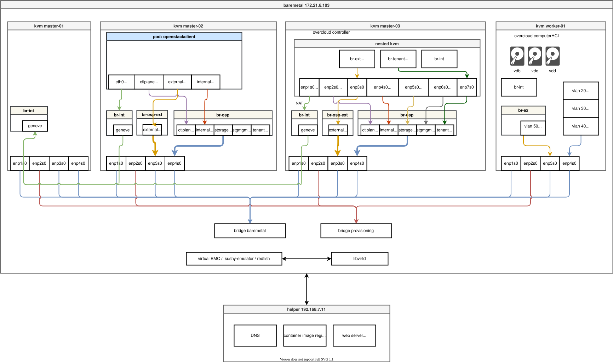
- 在物理机上，创建了2个bridge（这部分以后会改进，使用ovs, 配合vlan的配置）
- 创建4个kvm，每个kvm有4个网络接口，为了方便，每个kvm都有4块硬盘，但是其实只有worker的那个节点，是需要多出来的3个硬盘的。
- 创建了虚拟BMC，这个是openshift IPI安装过程中需要的。
- 物理机上开启了内存超分，硬盘的thin provision，最大化的榨取物理机的资源。
实验步骤
- 使用IPI模式安装openshift，我们使用 3 node / compact cluster 模式安装
- 纳管worker node / kvm
- 安装 cnv, nmstat, sriov, nfs等openshift插件
- 安装 openstack operator
- 配置 openstack 参数， 部署 openstack overcloud
视频讲解
prepare host
我们的实验是在一台物理机上，资源有限，我们就开启内存超分，让我们可以多多创建虚拟机。另外openstack controller是以虚拟机的形式，运行在openshift node里面的，我们的node已经是kvm了，那么就需要开启嵌套虚拟化的功能。
另外，很重要的一步，就是准备网络，本文创建了2个bridge，这个是openshift官方的方法，虽然并不是非常适用在本次实验，但是也凑合能用，问题是多个vlan混杂在bridge里面了，还有一个问题，就是如果想多个主机部署，vlan下的接口，跨主机是不通的。这个后面再用手动部署的ovs来完善，目前先凑合用。
memory over commit
我们先看看如何开启内存超分。如果不做如下的操作，多个kvm的内存总和就不能超过物理内存，这个对我们做实验会造成很大的麻烦，我们就开启它。以下操作不用重启系统。
cat << EOF >> /etc/sysctl.d/99-wzh-sysctl.conf
vm.overcommit_memory = 1
EOF
sysctl --systemnested virtulization
接下来，就是开启嵌套虚拟化。这样，我们就能在kvm里面，再启动一个kvm了。虽然，不得不说，这个里面的kvm是真的慢啊，但是做实验，能做下去最重要，对不。以下操作，不用重启系统。
# first, go to kvm host to config nested kvm
# https://zhuanlan.zhihu.com/p/35320117
cat /sys/module/kvm_intel/parameters/nested
# 0
cat << EOF > /etc/modprobe.d/kvm-nested.conf
options kvm_intel nested=1
options kvm-intel enable_shadow_vmcs=1
options kvm-intel enable_apicv=1
options kvm-intel ept=1
EOF
modprobe -r kvm_intel #协助掉内核中的kvm_intel模块，注意要在所有虚拟机都关闭的情况下执行
modprobe -a kvm_intel #重新加载该模块
cat /sys/module/kvm_intel/parameters/nested
# 1
cat /proc/cpuinfo | grep vmx
# on guest os
# if you see this file, means it is success.
ls /dev/kvmprepare network on 103
接下来，我们就在物理机上创建2个bridge, 分别是baremetal, provisioning，为什么要创建2个bridge，因为这个是openshift IPI安装的需求，但是其实IPI安装是有2个网络模式的，一个是单网络模式，只要baremetal就可以，另外一个模式，才是双网络模式，需要baremetal, provisioning两个网络。那我们能不能只用baremetal这个单网络模式呢？
openstack的官方文档里面，说了必须要provisioning网络，很遗憾，这次官方文档说对了。作者用baremetal单网络模式试过了，在最后部署openstack overcloud computerHCI节点的时候，openstack operator指示openshift给worker node耍操纵系统镜像，这次刷的不是coreos，而是我们提供的rhel镜像。在这一步，可能是openstack operator的限制，镜像必须从provisioning网络提供，也许以后软件升级了，这个双网络模式的要求会取消吧。
这一步操作，对应到架构图，是这部分：
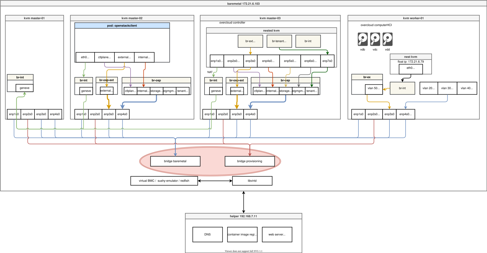
bridge: baremetal
我们先按照openshift官方文档，创建baremetal bridge.
# 创建实验用虚拟网络
mkdir -p /data/kvm
cd /data/kvm
cat << 'EOF' > /data/kvm/bridge.sh
#!/usr/bin/env bash
PUB_CONN='eno1'
PUB_IP='172.21.6.103/24'
PUB_GW='172.21.6.254'
PUB_DNS='172.21.1.1'
nmcli con down "$PUB_CONN"
nmcli con delete "$PUB_CONN"
nmcli con down baremetal
nmcli con delete baremetal
# RHEL 8.1 appends the word "System" in front of the connection,delete in case it exists
nmcli con down "System $PUB_CONN"
nmcli con delete "System $PUB_CONN"
nmcli connection add ifname baremetal type bridge con-name baremetal ipv4.method 'manual' \
ipv4.address "$PUB_IP" \
ipv4.gateway "$PUB_GW" \
ipv4.dns "$PUB_DNS"
nmcli con add type bridge-slave ifname "$PUB_CONN" master baremetal
nmcli con down "$PUB_CONN";pkill dhclient;dhclient baremetal
nmcli con up baremetal
EOF
bash /data/kvm/bridge.sh
nmcli con mod baremetal +ipv4.addresses "192.168.7.103/24"
nmcli con up baremetalvxlan: provisioning
然后，我们需要创建另外一个bridge, provisioning。如果物理机有2个网卡，当然可以在另外一个网卡上，创建这个bridge，作者之前也是这么做的。但是这里尝试另外一个做法，为以后切换到sdn做一些尝试和准备。
我们就在之前的那个网卡上，创建一个vxlan接口，并且绑定到provisioning bridge上去。
我们照着官方文档做就好了。
nmcli connection add type bridge con-name br-prov ifname br-prov ipv4.method disabled ipv6.method disabled
nmcli con modify br-prov ipv4.method manual ipv4.address 172.22.0.1/24
nmcli connection add type vxlan slave-type bridge con-name br-prov-vxlan5 ifname vxlan5 id 5 local 172.21.6.103 remote 172.21.6.102 master br-prov
nmcli connection up br-prov
bridge fdb show dev vxlan5
# c2:d2:b2:e7:6e:f5 vlan 1 master br-prov permanent
# c2:d2:b2:e7:6e:f5 master br-prov permanent
# 00:00:00:00:00:00 dst 172.21.6.103 self permanent
# ce:1f:f5:9e:f8:7f dst 172.21.6.103 self
cat << EOF > /data/kvm/vxlan5-bridge.xml
<network>
<name>provisioning</name>
<forward mode="bridge" />
<bridge name="br-prov" />
</network>
EOF
virsh net-define /data/kvm/vxlan5-bridge.xml
virsh net-start provisioning
virsh net-autostart provisioning
virsh net-list
# Name State Autostart Persistent
# -------------------------------------------------
# default active yes yes
# provisioning active yes yesprepare rpm repo on helper
在openshift上部署openstack，目前来说，原理并不复杂，openshift负责提供虚拟机（通过cnv), 和物理机（通过machine api)，这些虚拟机和物理机都已经装好了操纵系统。接下来openshift会准备好一套ansible脚本，管理员到指定pod里面，去运行这个openstack 安装的ansible脚本就好了。后面这一半的操作步骤，和安装openstack是一样的。
既然和安装openstack的过程是一样的，那我们就要按照openstack的要求，准备要rpm repo源。我们还是按照先去海外vps上下载，然后下载回来的做法来搞。
接下来，我们给下载好了rpm repo配置一个，repo config 文件，方便后面openstack安装的时候，导入。
最后，我们做一个自动启动的web server，来给这个rpm repo提供服务。
# sync repo on vultr
dnf install -y yum-utils
cd mnt/blockstorage/
subscription-manager release --set=8.6
declare -a arr=("rhel-8-for-x86_64-baseos-eus-rpms"
"rhel-8-for-x86_64-appstream-eus-rpms"
"rhel-8-for-x86_64-highavailability-eus-rpms"
"ansible-2.9-for-rhel-8-x86_64-rpms"
openstack-16.2-for-rhel-8-x86_64-rpms
fast-datapath-for-rhel-8-x86_64-rpms
)
for i in "${arr[@]}"
do
dnf reposync --repoid="$i" -m --download-metadata -n --delete
done
# baseos should sync with old versoin
dnf reposync --repoid=rhel-8-for-x86_64-baseos-eus-rpms -m --download-metadata --delete
# on local / helper
declare -a arr=("rhel-8-for-x86_64-baseos-eus-rpms"
"rhel-8-for-x86_64-appstream-eus-rpms"
"rhel-8-for-x86_64-highavailability-eus-rpms"
"ansible-2.9-for-rhel-8-x86_64-rpms"
openstack-16.2-for-rhel-8-x86_64-rpms
fast-datapath-for-rhel-8-x86_64-rpms
)
VAR_IP=158.247.234.245
for i in "${arr[@]}"
do
rsync -P --delete -arz root@$VAR_IP:/mnt/blockstorage/$i /data/dnf/
done
# after download , we create a repo config file
# this will be used later when install openstack
echo > /data/dnf/osp.repo
for i in "${arr[@]}"
do
cat << EOF >> /data/dnf/osp.repo
[$i]
name=$i
baseurl=http://192.168.7.11:5000/$i
enabled=1
gpgcheck=0
EOF
done
# setup web server startup service
# let the web server auto start
cat << EOF > /etc/systemd/system/local-webserver-osp.service
[Unit]
Description=local-webserver-osp
[Service]
User=root
WorkingDirectory=/data/dnf
ExecStart=/bin/bash -c 'python3 -m http.server 5000'
Restart=always
[Install]
WantedBy=multi-user.target
EOF
systemctl daemon-reload
systemctl enable --now local-webserver-osp.servicelvs config
为了压榨服务器资源，我们还配置lvm thin provision，这样能高效的使用磁盘资源，避免浪费。lvm thin provision简单来说，就是硬盘的超售。
pvcreate -y /dev/sdb
vgcreate vgdata /dev/sdb
# https://access.redhat.com/articles/766133
lvcreate -y -n poolA -L 500G vgdata
lvcreate -y -n poolA_meta -L 1G vgdata
lvconvert -y --thinpool vgdata/poolA --poolmetadata vgdata/poolA_meta
# Thin pool volume with chunk size 64.00 KiB can address at most <15.88 TiB of data.
# WARNING: Converting vgdata/poolA and vgdata/poolA_meta to thin pool's data and metadata volumes with metadata wiping.
# THIS WILL DESTROY CONTENT OF LOGICAL VOLUME (filesystem etc.)
# Converted vgdata/poolA and vgdata/poolA_meta to thin pool.
lvextend -l +100%FREE vgdata/poolA
# Rounding size to boundary between physical extents: <1.09 GiB.
# Size of logical volume vgdata/poolA_tmeta changed from 1.00 GiB (256 extents) to <1.09 GiB (279 extents).
# Size of logical volume vgdata/poolA_tdata changed from 500.00 GiB (128000 extents) to <1.09 TiB (285457 extents).
# Logical volume vgdata/poolA successfully resized.kvm setup
做完了上面的准备工作，我们就要开始创建kvm了，我们做实验是会反复重装的，所以会首先有清理的脚本。然后我们有另外一些脚本去创建kvm，注意，我们是创建kvm，而不会去启动他们。
cleanup
我们准备了脚本，来清理kvm，把物理机清理成一个干净的系统。
create_lv() {
var_vg=$1
var_pool=$2
var_lv=$3
var_size=$4
var_action=$5
lvremove -f $var_vg/$var_lv
# lvcreate -y -L $var_size -n $var_lv $var_vg
if [ "$var_action" == "recreate" ]; then
lvcreate --type thin -n $var_lv -V $var_size --thinpool $var_vg/$var_pool
wipefs --all --force /dev/$var_vg/$var_lv
fi
}
virsh destroy ocp4-ipi-osp-master-01
virsh undefine ocp4-ipi-osp-master-01
create_lv vgdata poolA lv-ocp4-ipi-osp-master-01 100G
create_lv vgdata poolA lv-ocp4-ipi-osp-master-01-data 100G
create_lv vgdata poolA lv-ocp4-ipi-osp-master-01-data-02 100G
create_lv vgdata poolA lv-ocp4-ipi-osp-master-01-data-03 100G
virsh destroy ocp4-ipi-osp-master-02
virsh undefine ocp4-ipi-osp-master-02
create_lv vgdata poolA lv-ocp4-ipi-osp-master-02 100G
create_lv vgdata poolA lv-ocp4-ipi-osp-master-02-data 100G
create_lv vgdata poolA lv-ocp4-ipi-osp-master-02-data-02 100G
create_lv vgdata poolA lv-ocp4-ipi-osp-master-02-data-03 100G
virsh destroy ocp4-ipi-osp-master-03
virsh undefine ocp4-ipi-osp-master-03
create_lv vgdata poolA lv-ocp4-ipi-osp-master-03 100G
create_lv vgdata poolA lv-ocp4-ipi-osp-master-03-data 100G
create_lv vgdata poolA lv-ocp4-ipi-osp-master-03-data-02 100G
create_lv vgdata poolA lv-ocp4-ipi-osp-master-03-data-03 100G
virsh destroy ocp4-ipi-osp-worker-01
virsh undefine ocp4-ipi-osp-worker-01
create_lv vgdata poolA lv-ocp4-ipi-osp-worker-01 200G
create_lv vgdata poolA lv-ocp4-ipi-osp-worker-01-data 100G
create_lv vgdata poolA lv-ocp4-ipi-osp-worker-01-data-02 100G
create_lv vgdata poolA lv-ocp4-ipi-osp-worker-01-data-03 100G
virsh destroy ocp4-ipi-osp-worker-02
virsh undefine ocp4-ipi-osp-worker-02
create_lv vgdata poolA lv-ocp4-ipi-osp-worker-02 200G
create_lv vgdata poolA lv-ocp4-ipi-osp-worker-02-data 100G
create_lv vgdata poolA lv-ocp4-ipi-osp-worker-02-data-02 100G
create_lv vgdata poolA lv-ocp4-ipi-osp-worker-02-data-03 100G
virsh destroy ocp4-ipi-osp-worker-03
virsh undefine ocp4-ipi-osp-worker-03
create_lv vgdata poolA lv-ocp4-ipi-osp-worker-03 200G
create_lv vgdata poolA lv-ocp4-ipi-osp-worker-03-data 100G
create_lv vgdata poolA lv-ocp4-ipi-osp-worker-03-data-02 100G
create_lv vgdata poolA lv-ocp4-ipi-osp-worker-03-data-03 100G
VAR_VM=`virsh list --all | grep bootstrap | awk '{print $2}'`
virsh destroy $VAR_VM
virsh undefine $VAR_VM
VAR_POOL=`virsh pool-list --all | grep bootstrap | awk '{print $1}'`
virsh pool-destroy $VAR_POOL
virsh pool-undefine $VAR_POOL
/bin/rm -rf /var/lib/libvirt/openshift-images/*
/bin/rm -rf /var/lib/libvirt/images/*
define kvm on 103
然后，我们就可以开始定义kvm了，这里不能启动kvm，因为定义的kvm没有引导盘，启动了也无法开始安装，IPI模式下，installer会调用virtual bmc redfish接口，给kvm挂载上启动镜像，开始安装过程。
我们为了简单起见，每个kvm都配置了4块硬盘，4个网卡，其实只有worker node这一个kvm会用到4块硬盘。我们的vda硬盘还要大一些，因为要承载集群内的nfs服务器。由于我们配置了lvm thin provision，所以 lv 使用起来就可以肆无忌惮了。
/bin/rm -rf /var/lib/libvirt/images/*
create_lv() {
var_vg=$1
var_pool=$2
var_lv=$3
var_size=$4
var_action=$5
lvremove -f $var_vg/$var_lv
# lvcreate -y -L $var_size -n $var_lv $var_vg
if [ "$var_action" == "recreate" ]; then
lvcreate --type thin -n $var_lv -V $var_size --thinpool $var_vg/$var_pool
wipefs --all --force /dev/$var_vg/$var_lv
fi
}
SNO_MEM=32
export KVM_DIRECTORY=/data/kvm
virsh destroy ocp4-ipi-osp-master-01
virsh undefine ocp4-ipi-osp-master-01
create_lv vgdata poolA lv-ocp4-ipi-osp-master-01 500G recreate
create_lv vgdata poolA lv-ocp4-ipi-osp-master-01-data 100G recreate
create_lv vgdata poolA lv-ocp4-ipi-osp-master-01-data-02 100G recreate
create_lv vgdata poolA lv-ocp4-ipi-osp-master-01-data-03 100G recreate
virt-install --name=ocp4-ipi-osp-master-01 --vcpus=16 --ram=$(($SNO_MEM*1024)) \
--cpu=host-model \
--disk path=/dev/vgdata/lv-ocp4-ipi-osp-master-01,device=disk,bus=virtio,format=raw \
--disk path=/dev/vgdata/lv-ocp4-ipi-osp-master-01-data,device=disk,bus=virtio,format=raw \
--disk path=/dev/vgdata/lv-ocp4-ipi-osp-master-01-data-02,device=disk,bus=virtio,format=raw \
--disk path=/dev/vgdata/lv-ocp4-ipi-osp-master-01-data-03,device=disk,bus=virtio,format=raw \
--os-variant rhel8.4 \
--network bridge=baremetal,model=virtio \
--network network:provisioning,model=virtio \
--network bridge=baremetal,model=virtio \
--network bridge=baremetal,model=virtio \
--print-xml > ${KVM_DIRECTORY}/ocp4-ipi-osp-master-01.xml
virsh define --file ${KVM_DIRECTORY}/ocp4-ipi-osp-master-01.xml
virsh destroy ocp4-ipi-osp-master-02
virsh undefine ocp4-ipi-osp-master-02
create_lv vgdata poolA lv-ocp4-ipi-osp-master-02 500G recreate
create_lv vgdata poolA lv-ocp4-ipi-osp-master-02-data 100G recreate
create_lv vgdata poolA lv-ocp4-ipi-osp-master-02-data-02 100G recreate
create_lv vgdata poolA lv-ocp4-ipi-osp-master-02-data-03 100G recreate
virt-install --name=ocp4-ipi-osp-master-02 --vcpus=16 --ram=$(($SNO_MEM*1024)) \
--cpu=host-model \
--disk path=/dev/vgdata/lv-ocp4-ipi-osp-master-02,device=disk,bus=virtio,format=raw \
--disk path=/dev/vgdata/lv-ocp4-ipi-osp-master-02-data,device=disk,bus=virtio,format=raw \
--disk path=/dev/vgdata/lv-ocp4-ipi-osp-master-02-data-02,device=disk,bus=virtio,format=raw \
--disk path=/dev/vgdata/lv-ocp4-ipi-osp-master-02-data-03,device=disk,bus=virtio,format=raw \
--os-variant rhel8.4 \
--network bridge=baremetal,model=virtio \
--network network:provisioning,model=virtio \
--network bridge=baremetal,model=virtio \
--network bridge=baremetal,model=virtio \
--print-xml > ${KVM_DIRECTORY}/ocp4-ipi-osp-master-02.xml
virsh define --file ${KVM_DIRECTORY}/ocp4-ipi-osp-master-02.xml
# SNO_MEM=64
virsh destroy ocp4-ipi-osp-master-03
virsh undefine ocp4-ipi-osp-master-03
create_lv vgdata poolA lv-ocp4-ipi-osp-master-03 500G recreate
create_lv vgdata poolA lv-ocp4-ipi-osp-master-03-data 100G recreate
create_lv vgdata poolA lv-ocp4-ipi-osp-master-03-data-02 100G recreate
create_lv vgdata poolA lv-ocp4-ipi-osp-master-03-data-03 100G recreate
virt-install --name=ocp4-ipi-osp-master-03 --vcpus=16 --ram=$(($SNO_MEM*1024)) \
--cpu=host-model \
--disk path=/dev/vgdata/lv-ocp4-ipi-osp-master-03,device=disk,bus=virtio,format=raw \
--disk path=/dev/vgdata/lv-ocp4-ipi-osp-master-03-data,device=disk,bus=virtio,format=raw \
--disk path=/dev/vgdata/lv-ocp4-ipi-osp-master-03-data-02,device=disk,bus=virtio,format=raw \
--disk path=/dev/vgdata/lv-ocp4-ipi-osp-master-03-data-03,device=disk,bus=virtio,format=raw \
--os-variant rhel8.4 \
--network bridge=baremetal,model=virtio \
--network network:provisioning,model=virtio \
--network bridge=baremetal,model=virtio \
--network bridge=baremetal,model=virtio \
--print-xml > ${KVM_DIRECTORY}/ocp4-ipi-osp-master-03.xml
virsh define --file ${KVM_DIRECTORY}/ocp4-ipi-osp-master-03.xml
SNO_MEM=16
virsh destroy ocp4-ipi-osp-worker-01
virsh undefine ocp4-ipi-osp-worker-01
create_lv vgdata poolA lv-ocp4-ipi-osp-worker-01 500G recreate
create_lv vgdata poolA lv-ocp4-ipi-osp-worker-01-data 100G recreate
create_lv vgdata poolA lv-ocp4-ipi-osp-worker-01-data-02 100G recreate
create_lv vgdata poolA lv-ocp4-ipi-osp-worker-01-data-03 100G recreate
virt-install --name=ocp4-ipi-osp-worker-01 --vcpus=16 --ram=$(($SNO_MEM*1024)) \
--cpu=host-model \
--disk path=/dev/vgdata/lv-ocp4-ipi-osp-worker-01,device=disk,bus=virtio,format=raw \
--disk path=/dev/vgdata/lv-ocp4-ipi-osp-worker-01-data,device=disk,bus=virtio,format=raw \
--disk path=/dev/vgdata/lv-ocp4-ipi-osp-worker-01-data-02,device=disk,bus=virtio,format=raw \
--disk path=/dev/vgdata/lv-ocp4-ipi-osp-worker-01-data-03,device=disk,bus=virtio,format=raw \
--os-variant rhel8.4 \
--network bridge=baremetal,model=virtio \
--network network:provisioning,model=virtio \
--network bridge=baremetal,model=virtio \
--network bridge=baremetal,model=virtio \
--print-xml > ${KVM_DIRECTORY}/ocp4-ipi-osp-worker-01.xml
virsh define --file ${KVM_DIRECTORY}/ocp4-ipi-osp-worker-01.xmlbmc simulator
定义了kvm，我们需要配套的virtual BMC / redfish 接口来控制他们，这都是为了模拟真实的物理机，在真实的物理机场景下，openshift installer会调用redfish接口来控制物理机。
我们选用openstack项目的sushy工具来做这个virtual BMC。运行一个sushy实例，就可以管理同一个物理机上的所有kvm实例，简单易用。
最后，我们使用systemd来定义一个自动启动的服务，来运行sushy.
这一步操作，对应到架构图，是这部分：
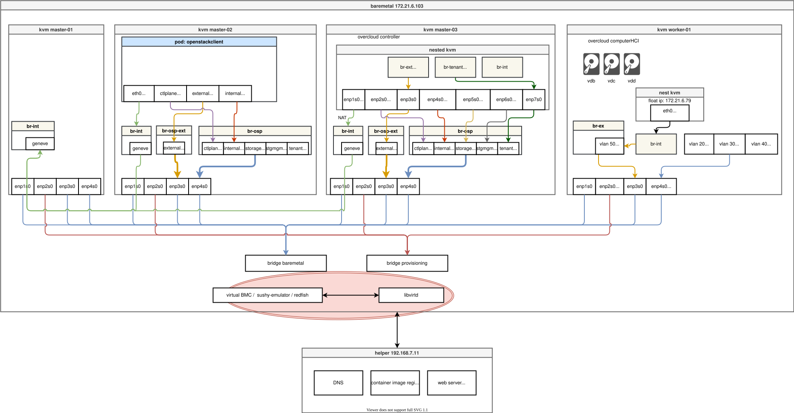
# try to install and run it manually
dnf -y install python3-pip
pip3 install --user sushy-tools
mkdir -p /etc/crts
scp root@192.168.7.11:/etc/crts/* /etc/crts/
/root/.local/bin/sushy-emulator -i 0.0.0.0 --ssl-certificate /etc/crts/redhat.ren.crt --ssl-key /etc/crts/redhat.ren.key
# try to deploy as systemd service
cat << EOF > /etc/systemd/system/sushy-emulator.service
[Unit]
Description=sushy-emulator
[Service]
User=root
WorkingDirectory=/root
ExecStart=/bin/bash -c '/root/.local/bin/sushy-emulator -i 0.0.0.0 --ssl-certificate /etc/crts/redhat.ren.crt --ssl-key /etc/crts/redhat.ren.key'
Restart=always
[Install]
WantedBy=multi-user.target
EOF
systemctl daemon-reload
systemctl enable --now sushy-emulator.serviceget mac and vm list on 103
有了virtual BMC，我们就要抽取一些openshift installer需要用到的参数，一个是kvm的mac地址，一个是redfish里面需要的uuid。
我们使用如下的脚本，来自动的得到，并且上传到 helper 节点去。
# on helper clean all
/bin/rm -f /data/install/mac.list.*
/bin/rm -f /data/install/vm.list.*
# back to 103
cd /data/kvm/
for i in ocp4-ipi-osp-master-0{1..3} ocp4-ipi-osp-worker-0{1..1}
do
echo -ne "${i}\t" ;
virsh dumpxml ${i} | grep "mac address" | cut -d\' -f2 | tr '\n' '\t'
echo
done > mac.list.103
cat /data/kvm/mac.list.103
# ocp4-ipi-osp-master-01 52:54:00:67:64:5f 52:54:00:e8:28:e7 52:54:00:4a:a4:39
# ocp4-ipi-osp-master-02 52:54:00:ac:ed:36 52:54:00:b5:34:c4 52:54:00:87:36:75
# ocp4-ipi-osp-master-03 52:54:00:ae:72:e5 52:54:00:87:19:c2 52:54:00:99:55:12
# ocp4-ipi-osp-worker-01 52:54:00:17:b2:2d 52:54:00:ca:74:c0 52:54:00:f4:5e:a8
cat << 'EOF' > redfish.sh
#!/usr/bin/env bash
curl -k -s https://127.0.0.1:8000/redfish/v1/Systems/ | jq -r '.Members[]."@odata.id"' > list
while read -r line; do
curl -k -s https://127.0.0.1:8000/$line | jq -j '.Id, " ", .Name, "\n" '
done < list
EOF
bash redfish.sh | grep ipi > /data/kvm/vm.list.103
cat /data/kvm/vm.list.103
# 6b9a4f6b-d751-4fd5-9493-39792039e9e2 ocp4-ipi-osp-worker-01
# 1a2d1e2a-5f50-49cf-920e-11f7b7f136dc ocp4-ipi-osp-master-02
# 9c7085a2-ed0c-4cbf-94ca-065d3e8db335 ocp4-ipi-osp-master-01
# 14474c89-152c-4580-8bbb-7f03e4e370e0 ocp4-ipi-osp-master-03
scp /data/kvm/{mac,vm}.list.* root@192.168.7.11:/data/install/on helper node
终于所有的准备工作都做完了，我们开始在helper上面进行openshift的安装。在这之前，还有一个配置helper节点的步骤，主要是配置dns服务之类的，在这里就不重复了，有需要了解的，可以看这里的文档
get installer binary
我们先要从安装文件目录中，得到installer的二进制文件。
# switch to you install version
export BUILDNUMBER=4.11.6
pushd /data/ocp4/${BUILDNUMBER}
tar -xzf openshift-client-linux-${BUILDNUMBER}.tar.gz -C /usr/local/bin/
tar -xzf openshift-install-linux-${BUILDNUMBER}.tar.gz -C /usr/local/bin/
tar -xzf oc-mirror.tar.gz -C /usr/local/bin/
chmod +x /usr/local/bin/oc-mirror
install -m 755 /data/ocp4/clients/butane-amd64 /usr/local/bin/butane
install -m 755 /data/ocp4/clients/coreos-installer_amd64 /usr/local/bin/coreos-installer
popdprepare web server for iso/images
接下来，我们准备一个自动启动的 web server，提供一些iso等镜像的下载服务。
############################
# as root create web server
cd /data/ocp4
python3 -m http.server 8080
cat << EOF > /etc/systemd/system/local-webserver.service
[Unit]
Description=local-webserver
[Service]
User=root
WorkingDirectory=/data/ocp4
ExecStart=/bin/bash -c 'python3 -m http.server 8080'
Restart=always
[Install]
WantedBy=multi-user.target
EOF
systemctl daemon-reload
systemctl enable --now local-webserver.service
# end as root
############################create the install yaml
接下来我们创建安装配置文件。这里面最关键的就是那个yaml模板，我们在模板里面，启动IPI安装模式，并且配置3个master的redfish接口信息，并启用静态IP安装的方法，配置了静态IP信息。
安装配置yaml文件创建后，我们调用installer，把他们转化成ignition等真正的安装配置文件，并且和baremetal installer二进制文件一起，传递到物理机上。
这里面有2个二进制文件，一个是openshift installer，这个一般场景下，比如对接公有云，私有云，就够了，它会创建ignition文件，并且调用各种云的接口，创建虚拟机，开始安装。
但是如果是baremetal场景，有一个单独的baremetal installer二进制文件，它读取配置文件，调用物理机BMC接口信息，来开始安装，这个区别是目前openshift版本上的情况，不知道未来会不会有变化。
# create a user and create the cluster under the user
useradd -m 3nodeipi
su - 3nodeipi
ssh-keygen
cat << EOF > ~/.ssh/config
StrictHostKeyChecking no
UserKnownHostsFile=/dev/null
EOF
chmod 600 ~/.ssh/config
cat << 'EOF' >> ~/.bashrc
export BASE_DIR='/home/3nodeipi/'
EOF
export BASE_DIR='/home/3nodeipi/'
export BUILDNUMBER=4.11.6
mkdir -p ${BASE_DIR}/data/{sno/disconnected,install}
# set some parameter of you rcluster
NODE_SSH_KEY="$(cat ${BASE_DIR}/.ssh/id_rsa.pub)"
INSTALL_IMAGE_REGISTRY=quaylab.infra.redhat.ren:8443
PULL_SECRET='{"auths":{"registry.redhat.io": {"auth": "ZHVtbXk6ZHVtbXk=","email": "noemail@localhost"},"registry.ocp4.redhat.ren:5443": {"auth": "ZHVtbXk6ZHVtbXk=","email": "noemail@localhost"},"'${INSTALL_IMAGE_REGISTRY}'": {"auth": "'$( echo -n 'admin:shadowman' | openssl base64 )'","email": "noemail@localhost"}}}'
NTP_SERVER=192.168.7.11
HELP_SERVER=192.168.7.11
KVM_HOST=192.168.7.11
API_VIP=192.168.7.100
INGRESS_VIP=192.168.7.101
CLUSTER_PROVISION_IP=192.168.7.103
BOOTSTRAP_IP=192.168.7.12
# 定义单节点集群的节点信息
SNO_CLUSTER_NAME=acm-demo-one
SNO_BASE_DOMAIN=redhat.ren
BOOTSTRAP_IP=192.168.7.22
MASTER_01_IP=192.168.7.23
MASTER_02_IP=192.168.7.24
MASTER_03_IP=192.168.7.25
WORKER_01_IP=192.168.7.26
BOOTSTRAP_HOSTNAME=bootstrap-demo
MASTER_01_HOSTNAME=master-01-demo
MASTER_02_HOSTNAME=master-02-demo
MASTER_03_HOSTNAME=master-03-demo
WORKER_01_HOSTNAME=worker-01-demo
BOOTSTRAP_INTERFACE=enp1s0
MASTER_01_INTERFACE=enp1s0
MASTER_02_INTERFACE=enp1s0
MASTER_03_INTERFACE=enp1s0
WORKER_01_INTERFACE=enp1s0
BOOTSTRAP_DISK=/dev/vda
MASTER_01_DISK=/dev/vda
MASTER_02_DISK=/dev/vda
MASTER_03_DISK=/dev/vda
WORKER_01_DISK=/dev/vda
OCP_GW=192.168.7.11
OCP_NETMASK=255.255.255.0
OCP_NETMASK_S=24
OCP_DNS=192.168.7.11
# echo ${SNO_IF_MAC} > /data/sno/sno.mac
mkdir -p ${BASE_DIR}/data/install
cd ${BASE_DIR}/data/install
/bin/rm -rf *.ign .openshift_install_state.json auth bootstrap manifests master*[0-9] worker*[0-9] openshift
cat << EOF > ${BASE_DIR}/data/install/install-config.yaml
apiVersion: v1
baseDomain: $SNO_BASE_DOMAIN
compute:
- name: worker
replicas: 0
controlPlane:
name: master
replicas: 3
metadata:
name: $SNO_CLUSTER_NAME
networking:
# OVNKubernetes , OpenShiftSDN
networkType: OVNKubernetes
clusterNetwork:
- cidr: 10.128.0.0/14
hostPrefix: 23
serviceNetwork:
- 172.31.0.0/16
machineNetwork:
- cidr: 192.168.7.0/24
pullSecret: '${PULL_SECRET}'
sshKey: |
$( cat ${BASE_DIR}/.ssh/id_rsa.pub | sed 's/^/ /g' )
additionalTrustBundle: |
$( cat /etc/crts/redhat.ren.ca.crt | sed 's/^/ /g' )
imageContentSources:
- mirrors:
- ${INSTALL_IMAGE_REGISTRY}/openshift/release-images
source: quay.io/openshift-release-dev/ocp-release
- mirrors:
- ${INSTALL_IMAGE_REGISTRY}/openshift/release
source: quay.io/openshift-release-dev/ocp-v4.0-art-dev
platform:
baremetal:
apiVIP: $API_VIP
ingressVIP: $INGRESS_VIP
provisioningNetwork: "Managed"
provisioningNetworkCIDR: 172.22.0.0/24
provisioningNetworkInterface: enp2s0
provisioningBridge: br-prov
clusterProvisioningIP: 172.22.0.6
bootstrapProvisioningIP: 172.22.0.7
bootstrapExternalStaticIP: 192.168.7.22/24
bootstrapExternalStaticGateway: 192.168.7.11
externalBridge: baremetal
bootstrapOSImage: http://192.168.7.11:8080/rhcos-qemu.x86_64.qcow2.gz?sha256=$(zcat /data/ocp4/rhcos-qemu.x86_64.qcow2.gz | sha256sum | awk '{print $1}')
clusterOSImage: http://192.168.7.11:8080/rhcos-openstack.x86_64.qcow2.gz?sha256=$(sha256sum /data/ocp4/rhcos-openstack.x86_64.qcow2.gz | awk '{print $1}')
hosts:
- name: ocp4-ipi-osp-master-01
role: master
bootMode: legacy
bmc:
address: redfish-virtualmedia://192.168.7.103:8000/redfish/v1/Systems/$(cat /data/install/vm.list.* | grep master-01 | awk '{print $1}')
username: admin
password: password
disableCertificateVerification: True
bootMACAddress: $(cat /data/install/mac.list.* | grep master-01 | awk '{print $2}')
rootDeviceHints:
deviceName: "$MASTER_01_DISK"
networkConfig:
dns-resolver:
config:
server:
- ${OCP_DNS}
interfaces:
- ipv4:
address:
- ip: ${MASTER_01_IP}
prefix-length: ${OCP_NETMASK_S}
dhcp: false
enabled: true
name: ${MASTER_01_INTERFACE}
state: up
type: ethernet
routes:
config:
- destination: 0.0.0.0/0
next-hop-address: ${OCP_GW}
next-hop-interface: ${MASTER_01_INTERFACE}
table-id: 254
- name: ocp4-ipi-osp-master-02
role: master
bootMode: legacy
bmc:
address: redfish-virtualmedia://192.168.7.103:8000/redfish/v1/Systems/$(cat /data/install/vm.list.* | grep master-02 | awk '{print $1}')
username: admin
password: password
disableCertificateVerification: True
bootMACAddress: $(cat /data/install/mac.list.* | grep master-02 | awk '{print $2}')
rootDeviceHints:
deviceName: "$MASTER_02_DISK"
networkConfig:
dns-resolver:
config:
server:
- ${OCP_DNS}
interfaces:
- ipv4:
address:
- ip: ${MASTER_02_IP}
prefix-length: ${OCP_NETMASK_S}
dhcp: false
enabled: true
name: ${MASTER_02_INTERFACE}
state: up
type: ethernet
routes:
config:
- destination: 0.0.0.0/0
next-hop-address: ${OCP_GW}
next-hop-interface: ${MASTER_02_INTERFACE}
table-id: 254
- name: ocp4-ipi-osp-master-03
role: master
bootMode: legacy
bmc:
address: redfish-virtualmedia://192.168.7.103:8000/redfish/v1/Systems/$(cat /data/install/vm.list.* | grep master-03 | awk '{print $1}')
username: admin
password: password
disableCertificateVerification: True
bootMACAddress: $(cat /data/install/mac.list.* | grep master-03 | awk '{print $2}')
rootDeviceHints:
deviceName: "$MASTER_03_DISK"
networkConfig:
dns-resolver:
config:
server:
- ${OCP_DNS}
interfaces:
- ipv4:
address:
- ip: ${MASTER_03_IP}
prefix-length: ${OCP_NETMASK_S}
dhcp: false
enabled: true
name: ${MASTER_03_INTERFACE}
state: up
type: ethernet
routes:
config:
- destination: 0.0.0.0/0
next-hop-address: ${OCP_GW}
next-hop-interface: ${MASTER_03_INTERFACE}
table-id: 254
EOF
/bin/cp -f ${BASE_DIR}/data/install/install-config.yaml ${BASE_DIR}/data/install/install-config.yaml.bak
/data/ocp4/${BUILDNUMBER}/openshift-baremetal-install --dir ${BASE_DIR}/data/install/ create manifests
/bin/cp -f /data/ocp4/ansible-helper/files/* ${BASE_DIR}/data/install/openshift/
#############################################
# run as root if you have not run below, at least one time
# it will generate registry configuration
# copy image registry proxy related config
cd /data/ocp4
bash image.registries.conf.sh nexus.infra.redhat.ren:8083
/bin/cp -f /data/ocp4/image.registries.conf /etc/containers/registries.conf.d/
#############################################
/bin/cp -f /data/ocp4/99-worker-container-registries.yaml ${BASE_DIR}/data/install/openshift
/bin/cp -f /data/ocp4/99-master-container-registries.yaml ${BASE_DIR}/data/install/openshift
cd ${BASE_DIR}/data/install/
# then, we copy baremetal install binary to kvm host
sshpass -p panpan ssh-copy-id root@172.21.6.103
scp /data/ocp4/${BUILDNUMBER}/openshift-baremetal-install root@172.21.6.103:/usr/local/bin/
# the, we copy configuration files to kvm host
cat << EOF > ${BASE_DIR}/data/install/scp.sh
ssh root@172.21.6.103 "rm -rf /data/install;"
scp -r ${BASE_DIR}/data/install root@172.21.6.103:/data/install
EOF
bash ${BASE_DIR}/data/install/scp.shkvm host (103) to begin install
到现在位置，万事俱备了，我们就可以在物理机上真正的开始安装了。到这一步，我们没有特别需要做的，因为是IPI模式，全自动，我们运行命令，等着安装成功的结果，并且把各种密码输出记录下来就好了。
cd /data/install
openshift-baremetal-install --dir /data/install/ --log-level debug create cluster
# ......
# INFO Install complete!
# INFO To access the cluster as the system:admin user when using 'oc', run
# INFO export KUBECONFIG=/data/install/auth/kubeconfig
# INFO Access the OpenShift web-console here: https://console-openshift-console.apps.acm-demo-one.redhat.ren
# INFO Login to the console with user: "kubeadmin", and password: "JgTXJ-d9Nsb-QHGS2-Puor3"
# DEBUG Time elapsed per stage:
# DEBUG bootstrap: 23s
# DEBUG masters: 16m31s
# DEBUG Bootstrap Complete: 19m11s
# DEBUG Bootstrap Destroy: 11s
# DEBUG Cluster Operators: 7m10s
# INFO Time elapsed: 43m37s
# tail -f /data/install/.openshift_install.logon helper to see result
我们需要把物理机上的密钥文件等信息，传回helper节点。方便我们后续的操作。
# on helper node
scp -r root@172.21.6.103:/data/install/auth ${BASE_DIR}/data/install/auth
cd ${BASE_DIR}/data/install
export KUBECONFIG=${BASE_DIR}/data/install/auth/kubeconfig
echo "export KUBECONFIG=${BASE_DIR}/data/install/auth/kubeconfig" >> ~/.bashrc
# oc completion bash | sudo tee /etc/bash_completion.d/openshift > /dev/null
# if you power off cluster for long time
# you will need to re-approve the csr
oc get csr | grep -v Approved
oc get csr -ojson | jq -r '.items[] | select(.status == {} ) | .metadata.name' | xargs oc adm certificate approvepassword login and oc config
安装完成了，我们要配置一些节点ssh登录的配置。openshift默认的ssh登录，是禁用root登录的，并且启动了time out 机制，这个让我们做实验非常难受和不便，我们在这里就使用脚本，打开这些限制。最终，我们可以轻松的远程root直接用密码登录了。
# init setting for helper node
cat << EOF > ~/.ssh/config
StrictHostKeyChecking no
UserKnownHostsFile=/dev/null
EOF
chmod 600 ~/.ssh/config
cat > ${BASE_DIR}/data/install/crack.txt << EOF
echo redhat | sudo passwd --stdin root
sudo sed -i "s|^PasswordAuthentication no$|PasswordAuthentication yes|g" /etc/ssh/sshd_config
sudo sed -i "s|^PermitRootLogin no$|PermitRootLogin yes|g" /etc/ssh/sshd_config
sudo sed -i "s|^#ClientAliveInterval 180$|ClientAliveInterval 1800|g" /etc/ssh/sshd_config
sudo systemctl restart sshd
sudo sh -c 'echo "export KUBECONFIG=/etc/kubernetes/static-pod-resources/kube-apiserver-certs/secrets/node-kubeconfigs/localhost.kubeconfig" >> /root/.bashrc'
sudo sh -c 'echo "RET=\\\`oc config use-context system:admin\\\`" >> /root/.bashrc'
EOF
for i in 23 24 25
do
ssh core@192.168.7.$i < ${BASE_DIR}/data/install/crack.txt
donefrom other host
能远程密码登录了，我们还希望能自动ssh登录，由于openshift节点很多，一台一台的去配置比较麻烦，我们这里提供了脚本，可以批量的来搞。
# https://unix.stackexchange.com/questions/230084/send-the-password-through-stdin-in-ssh-copy-id
dnf install -y sshpass
for i in 23 24 25
do
sshpass -p 'redhat' ssh-copy-id root@192.168.7.$i
donepower off
home lab的特点，是为了节电，没人用的时候，需要关机，那么我们就提供这样的脚本，来方便openshift集群关机操作。
for i in 23 24 25
do
ssh root@192.168.7.$i poweroff
donereboot
有的时候，openshift节点需要全部来一次reboot，来排除错误。这里也有脚本来帮忙。
for i in 23 24 25
do
ssh root@192.168.7.$i reboot
donepower on
同样，我们有脚本帮助批量启动虚拟机。
# or
for i in {1..3}
do
virsh start ocp4-ipi-osp-master-0$i
donecheck info
我们日常还会有一些集群各个节点收集信息，脚本操作的工作，也提供脚本模板，帮助日常工作。
for i in 23 24 25
do
ssh root@192.168.7.$i "ip a"
done
cat > ${BASE_DIR}/data/install/crack.txt << 'EOF'
for i in {3..8}
do
nmcli con down enp${i}s0
nmcli con del enp${i}s0
done
EOF
for i in 23 24 25
do
ssh root@192.168.7.$i < ${BASE_DIR}/data/install/crack.txt
donetry to deploy gitea
接下来，需要在helper节点上，部署一个git服务，这个是因为openstack在安装过程中，会先把安装脚本和配置，上传到git服务器上，作为一个git commit，然后真正的部署动作，会从这个git commit上下载，执行。
我们用gitea来提供这个git服务，安装过程网上教程一堆，我们就用最简单的方法来装。但是openstack对git服务有特殊的要求，就是git服务必须使用ssh通道来提供服务，这个就需要测试了，而我们使用了非标准的ssh端口来提供这个服务，也导致了后面一连串的不兼容错误。
不管怎么说，通过ssh访问git服务，肯定要配置出来，并且，我们还要配置ssh key 认证，用密钥的方式的访问。
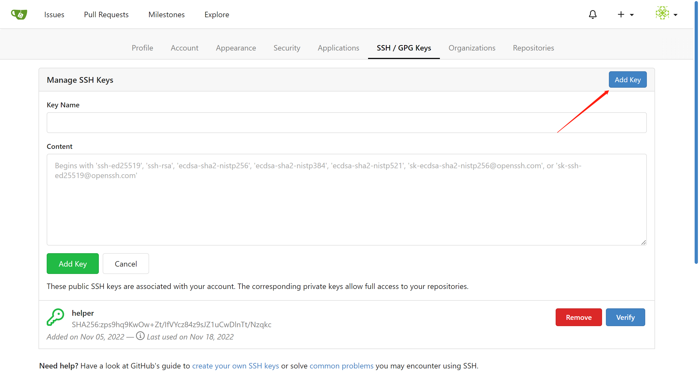
最后，给出了测试ssh访问git服务的命令行，方便验证。
rm -rf /data/ccn/gitea
mkdir -p /data/ccn/gitea
chown -R 1000:1000 /data/ccn/gitea
podman run -d --replace --name gitea \
-v /data/ccn/gitea:/data:Z \
-v /etc/localtime:/etc/localtime:ro \
-e USER_UID=1000 \
-e USER_GID=1000 \
-p 10090:3000 \
-p 10022:22 \
docker.io/gitea/gitea:1.17.3
# use systemd to auto-run gitea
podman generate systemd --files --name gitea
/bin/cp -Zf container-gitea.service /etc/systemd/system/
systemctl daemon-reload
systemctl enable --now container-gitea.service
# http://quaylab.infra.redhat.ren:10090/
# root / redhat
# setup ssh key for gitea
# test the ssh git access
ssh -T -p 10022 git@quaylab.infra.redhat.ren
git clone ssh://git@quaylab.infra.redhat.ren:10022/root/demo.gitadd baremetal host
IPI 模式下，添加一个新节点非常方便，只要定义一个BareMetalHost就好了。我们做osp on ocp的实验，添加一个worker node就可以了，后面osp operator会重新格式化这个worker node，然后把他加到osp cluster里面去。
配置是很简单，但是后面具体openshift是做了什么，让它能管理这个baremetal节点呢？ 经过反复的实验，作者大概归纳了相关的行为如下：
- 当第一次定义BareMetalHost的以后，ocp会调用redfish端口，启动这个节点，同时挂载一个rhcos 的iso，启动这个节点，这个iso是定制过的，会有一些网络参数，还有定义了自启动的服务。启动了以后，会默认启动一个ironic agent，这个ironic agent会连接 machine api，去下载任务，没发现什么特殊的任务的时候，它会探测一下主机环境，比如有多少core, memory, 存储等等，上报machine api以后，就自动关机了。
- 如果BareMetalHost里面还定义了image，那么ironic agent会下载这个镜像（之前在metal3 service里面转化过了），然后把它写到硬盘上，然后重启。这部分自动运行的命令，作者给记录下来了，在这里
这一步操作，对应到架构图，是这部分：
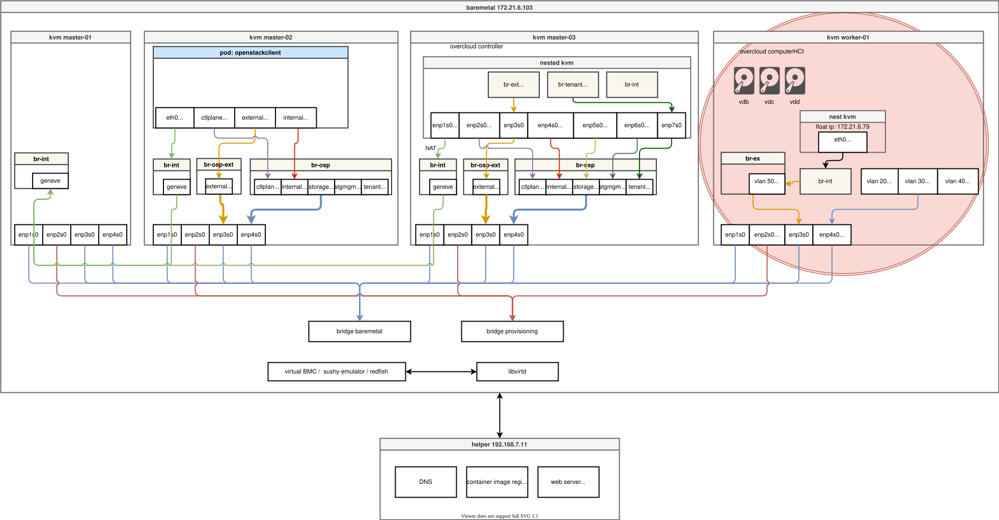
cd ${BASE_DIR}/data/install/
cat << EOF > ${BASE_DIR}/data/install/bmh-01.yaml
---
apiVersion: v1
kind: Secret
metadata:
name: worker-1-bmc-secret
type: Opaque
data:
username: $(echo -ne "admin" | base64)
password: $(echo -ne "password" | base64)
---
apiVersion: v1
kind: Secret
metadata:
name: ocp4-ipi-osp-worker-01-network-config-secret
type: Opaque
stringData:
nmstate: |
dns-resolver:
config:
server:
- 192.168.7.11
interfaces:
- ipv4:
address:
- ip: 192.168.7.26
prefix-length: 24
dhcp: false
enabled: true
name: enp1s0
state: up
type: ethernet
routes:
config:
- destination: 0.0.0.0/0
next-hop-address: 192.168.7.11
next-hop-interface: enp1s0
table-id: 254
---
apiVersion: metal3.io/v1alpha1
kind: BareMetalHost
metadata:
name: ocp4-ipi-osp-worker-01
spec:
online: false
bootMode: legacy
# externallyProvisioned: true
# hardwareProfile: unknown
bootMACAddress: $(cat /data/install/mac.list.* | grep worker-01 | awk '{print $2}')
bmc:
address: redfish-virtualmedia://192.168.7.103:8000/redfish/v1/Systems/$(cat /data/install/vm.list.* | grep worker-01 | awk '{print $1}')
credentialsName: worker-1-bmc-secret
disableCertificateVerification: true
rootDeviceHints:
deviceName: /dev/vda
preprovisioningNetworkDataName: ocp4-ipi-osp-worker-01-network-config-secret
EOF
oc -n openshift-machine-api create -f ${BASE_DIR}/data/install/bmh-01.yaml
# oc delete -f ${BASE_DIR}/data/install/bmh.yaml -n openshift-machine-api
# DO NOT USE, restore, delete the vm
# oc -n openshift-machine-api delete -f ${BASE_DIR}/data/install/bmh.yaml
# oc delete -f ${BASE_DIR}/data/install/bmh-03.yaml -n openshift-machine-api
oc get bmh -n openshift-machine-api
# NAME STATE CONSUMER ONLINE ERROR AGE
# ocp4-ipi-osp-master-01 externally provisioned acm-demo-one-42z8b-master-0 true 3h23m
# ocp4-ipi-osp-master-02 externally provisioned acm-demo-one-42z8b-master-1 true 3h23m
# ocp4-ipi-osp-master-03 externally provisioned acm-demo-one-42z8b-master-2 true 3h23m
# ocp4-ipi-osp-worker-01 externally provisioned true 54s
oc get machinesets -n openshift-machine-api
# NAME DESIRED CURRENT READY AVAILABLE AGE
# acm-demo-one-42z8b-worker-0 0 0 3h25m
# oc get machinesets -n openshift-machine-api -o json | jq -r .items[0].metadata.name
# # 扩容worker到3副本，会触发worker-2的部署
# oc scale --replicas=1 machineset $(oc get machinesets -n openshift-machine-api -o json | jq -r .items[0].metadata.name) -n openshift-machine-api
# oc scale --replicas=0 machineset $(oc get machinesets -n openshift-machine-api -o json | jq -r .items[0].metadata.name) -n openshift-machine-apiinstall nfs
我们装的ocp集群，要想使用复杂的业务场景，肯定是需要存储的，我们是home lab，肯定想选取一个轻量化的存储方案，红帽自己的ODF对资源要求比较高，那么我们就选择k8s sig的NFS方案，装一个NFS服务，到集群里面。这个方案的特点，是把集群里面的一个节点，变成存储节点，用这个节点的一个目录作为数据存储空间，应用/pod可以在集群里面的各个节点运行。总的来说，虽然简单，但是性能受限。
如果有其他的需求，可以考虑cnv的host-path方案，或者openEBS方案。
add local volumn
我们弄一个local volumn，给k8s sig的NFS方案作为后端存储。
# go to master-03, this is as storage node
# create the storage path
mkdir -p /var/wzh-local-pv/
chcon -Rt container_file_t /var/wzh-local-pv/
# on helper
cat << EOF > ${BASE_DIR}/data/install/local-pv.yaml
---
kind: StorageClass
apiVersion: storage.k8s.io/v1
metadata:
name: local-volume
provisioner: kubernetes.io/no-provisioner
volumeBindingMode: WaitForFirstConsumer
---
apiVersion: v1
kind: PersistentVolume
metadata:
name: example-local-pv
spec:
capacity:
storage: 450Gi
accessModes:
- ReadWriteOnce
persistentVolumeReclaimPolicy: Retain
storageClassName: local-volume
local:
path: /var/wzh-local-pv/
nodeAffinity:
required:
nodeSelectorTerms:
- matchExpressions:
- key: kubernetes.io/hostname
operator: In
values:
- one-master-03.acm-demo-one.redhat.ren
EOF
oc create --save-config -f ${BASE_DIR}/data/install/local-pv.yaml
# oc delete -f ${BASE_DIR}/data/install/local-pv.yamlinstall nfs based on local pv
接下来，我们直接用yaml的方式，部署这个NFS服务，我们已经定制好了k8s sig的NFS服务启动yaml，我们下载，然后修改一下参数就可以直接启动了。他会创建对应的role, deployment等参数信息。
oc create ns nfs-system
# oc project nfs-system
cd ${BASE_DIR}/data/install
export http_proxy="http://127.0.0.1:18801"
export https_proxy=${http_proxy}
wget -O nfs.all.yaml https://raw.githubusercontent.com/wangzheng422/nfs-ganesha-server-and-external-provisioner/wzh/deploy/openshift/nfs.all.local.pv.yaml
unset http_proxy
unset https_proxy
/bin/cp -f nfs.all.yaml nfs.all.yaml.run
# sed -i 's/storageClassName: odf-lvm-vg1/storageClassName: local-volume/' nfs.all.yaml.run
sed -i 's/one-master-03.acm-demo-one.redhat.ren/one-master-03.acm-demo-one.redhat.ren/' nfs.all.yaml.run
sed -i 's/storage: 5Gi/storage: 450Gi/' nfs.all.yaml.run
oc create --save-config -n nfs-system -f nfs.all.yaml.run
# oc delete -n nfs-system -f nfs.all.yaml.runinstall cnv, nmstat, sriov operator
我们按照openstack operator的官方文档，安装几个依赖的operator，他们是
- cnv， 这个是在openshift集群里面启动kvm虚拟机的，openstack的overcloud controller是用cnv启动的kvm来承载运行。
- nmstat， 这个是配置openshift节点网卡参数的插件，openstack会定义很复杂的网络参数，从上面的架构图就能看出来。注意，nmstat只能修改ocp集群管理的节点网卡参数，对于已经更改了基础镜像，变成osp纳管的节点，这个插件是管不到的。
- sriov, 这个是配置网卡直通的，作者还不太确定他用在什么地方，目前看，好像是cnv启动kvm的时候，会通过sriov把一堆网卡直通到kvm里面，干的是这个事情。
我们安装的时候，先用automatic approve的方式来安装，这样就能省去点击确认授权的步骤，装完了以后，我们在修改成manual approve的方式，防止集群自动升级operator。自动升级这个功能是很好，但是对于已经装好的集群，如果自动升级了，你还不知道，很可能就升级失败，导致你的集群功能受到影响。
install cnv
我们先装CNV，这个是在ocp里面启动虚拟机用的。CNV会带起来一大堆的pod，所以安装的时间有点长。
# install cnv
cat << EOF > ${BASE_DIR}/data/install/cnv.yaml
apiVersion: v1
kind: Namespace
metadata:
name: openshift-cnv
---
apiVersion: operators.coreos.com/v1
kind: OperatorGroup
metadata:
name: kubevirt-hyperconverged-group
namespace: openshift-cnv
spec:
targetNamespaces:
- openshift-cnv
---
apiVersion: operators.coreos.com/v1alpha1
kind: Subscription
metadata:
name: hco-operatorhub
namespace: openshift-cnv
spec:
source: redhat-operators
sourceNamespace: openshift-marketplace
name: kubevirt-hyperconverged
startingCSV: kubevirt-hyperconverged-operator.v4.11.0
channel: "stable"
EOF
oc create --save-config -f ${BASE_DIR}/data/install/cnv.yaml
# oc delete -f ${BASE_DIR}/data/install/cnv.yaml
oc get csv -n openshift-cnv
# NAME DISPLAY VERSION REPLACES PHASE
# kubevirt-hyperconverged-operator.v4.11.0 OpenShift Virtualization 4.11.0 kubevirt-hyperconverged-operator.v4.10.5 Succeeded
cat << EOF > ${BASE_DIR}/data/install/patch.yaml
spec:
installPlanApproval: Manual
EOF
oc patch -n openshift-cnv subscription/hco-operatorhub --type merge --patch-file=${BASE_DIR}/data/install/patch.yaml
cat << EOF > ${BASE_DIR}/data/install/cnv-hc.yaml
apiVersion: hco.kubevirt.io/v1beta1
kind: HyperConverged
metadata:
name: kubevirt-hyperconverged
namespace: openshift-cnv
spec:
EOF
oc create --save-config -f ${BASE_DIR}/data/install/cnv-hc.yaml
# cat << EOF > ${BASE_DIR}/data/install/hostpath.yaml
# apiVersion: hostpathprovisioner.kubevirt.io/v1beta1
# kind: HostPathProvisioner
# metadata:
# name: hostpath-provisioner
# spec:
# imagePullPolicy: IfNotPresent
# storagePools:
# - name: wzh-cnv-hostpath-storage-pool
# path: "/var/wzh-cnv-hostpath"
# workload:
# nodeSelector:
# kubernetes.io/os: linux
# EOF
# oc create --save-config -f ${BASE_DIR}/data/install/hostpath.yaml
# cat << EOF > ${BASE_DIR}/data/install/sc.yaml
# apiVersion: storage.k8s.io/v1
# kind: StorageClass
# metadata:
# name: hostpath-csi
# provisioner: kubevirt.io.hostpath-provisioner
# reclaimPolicy: Delete
# # volumeBindingMode: WaitForFirstConsumer
# volumeBindingMode: Immediate
# parameters:
# storagePool: wzh-cnv-hostpath-storage-pool
# EOF
# oc create --save-config -f ${BASE_DIR}/data/install/sc.yaml
# oc delete -f ${BASE_DIR}/data/install/sc.yamlinstall nmstat
接下来装nmstat，这个是设置网卡用的，记得不要设置ocp集群使用的通讯网口。
cat << EOF > ${BASE_DIR}/data/install/nmstat.yaml
---
apiVersion: v1
kind: Namespace
metadata:
labels:
kubernetes.io/metadata.name: openshift-nmstate
name: openshift-nmstate
name: openshift-nmstate
spec:
finalizers:
- kubernetes
---
apiVersion: operators.coreos.com/v1
kind: OperatorGroup
metadata:
annotations:
olm.providedAPIs: NMState.v1.nmstate.io
generateName: openshift-nmstate-
name: openshift-nmstate-wzh
namespace: openshift-nmstate
spec:
targetNamespaces:
- openshift-nmstate
---
apiVersion: operators.coreos.com/v1alpha1
kind: Subscription
metadata:
labels:
operators.coreos.com/kubernetes-nmstate-operator.openshift-nmstate: ""
name: kubernetes-nmstate-operator
namespace: openshift-nmstate
spec:
channel: "4.11"
name: kubernetes-nmstate-operator
source: redhat-operators
sourceNamespace: openshift-marketplace
EOF
oc create --save-config -f ${BASE_DIR}/data/install/nmstat.yaml
oc get csv -n openshift-nmstate
# NAME DISPLAY VERSION REPLACES PHASE
# kubernetes-nmstate-operator.4.11.0-202210250857 Kubernetes NMState Operator 4.11.0-202210250857 Succeeded
cat << EOF > ${BASE_DIR}/data/install/patch.yaml
spec:
installPlanApproval: Manual
EOF
oc patch -n openshift-nmstate subscription/kubernetes-nmstate-operator --type merge --patch-file=${BASE_DIR}/data/install/patch.yaml
cat << EOF > ${BASE_DIR}/data/install/nmstat-stat.yaml
---
apiVersion: nmstate.io/v1
kind: NMState
metadata:
name: nmstate
EOF
oc create --save-config -f ${BASE_DIR}/data/install/nmstat-stat.yamlinstall sriov
最后，装sriov，这个是给cnv启动的kvm配置网口直通的。
# oc annotate ns/openshift-sriov-network-operator workload.openshift.io/allowed=management
cat << EOF > ${BASE_DIR}/data/install/sriov.yaml
---
apiVersion: v1
kind: Namespace
metadata:
name: openshift-sriov-network-operator
annotations:
workload.openshift.io/allowed: management
---
apiVersion: operators.coreos.com/v1
kind: OperatorGroup
metadata:
name: sriov-network-operators
namespace: openshift-sriov-network-operator
spec:
targetNamespaces:
- openshift-sriov-network-operator
---
apiVersion: operators.coreos.com/v1alpha1
kind: Subscription
metadata:
name: sriov-network-operator-subscription
namespace: openshift-sriov-network-operator
spec:
channel: "4.11"
name: sriov-network-operator
source: redhat-operators
sourceNamespace: openshift-marketplace
EOF
oc create --save-config -f ${BASE_DIR}/data/install/sriov.yaml
oc get csv -n openshift-sriov-network-operator
# NAME DISPLAY VERSION REPLACES PHASE
# sriov-network-operator.4.11.0-202210250857 SR-IOV Network Operator 4.11.0-202210250857 Succeeded
oc get subscription -n openshift-sriov-network-operator
# NAME PACKAGE SOURCE CHANNEL
# sriov-network-operator-subscription sriov-network-operator redhat-operators 4.11
oc get subscription/sriov-network-operator-subscription -n openshift-sriov-network-operator -o json | jq .spec
# {
# "channel": "4.11",
# "name": "sriov-network-operator",
# "source": "redhat-operators",
# "sourceNamespace": "openshift-marketplace"
# }
cat << EOF > ${BASE_DIR}/data/install/patch.yaml
spec:
installPlanApproval: Manual
EOF
oc patch -n openshift-sriov-network-operator subscription/sriov-network-operator-subscription --type merge --patch-file=${BASE_DIR}/data/install/patch.yamlinstall osp operator
我们马上就要开始安装openstack组件啦。我们参考的文档是官方文档，官方文档，写的已经很用心，很好了，但是还是免不了有错误。我们会在接下来的步骤中，修正文档里面的错误。
build operator images
安装的第一步，居然是自己编译osp operator的镜像？算了，毕竟是TP版本的软件，有一些不完善，也能理解。根据文档，我们需要找最新的版本，自己打包operator catalog 镜像，这个镜像是一个operator hub的catalog，可以简单理解为，我们在ocp的应用商店里面，开了一个新的门面，叫openstack，里面就有一样商品，叫openstack。
# https://github.com/openstack-k8s-operators/osp-director-operator
# [osp-director-operator](https://catalog.redhat.com/software/containers/rhosp-rhel8-tech-preview/osp-director-operator/607dd3bf87c834779d77611b)
# [osp-director-operator-bundle](https://catalog.redhat.com/software/containers/rhosp-rhel8-tech-preview/osp-director-operator-bundle/607dd43903f4b3563ab483b3)
#########################
# on helper
# run as root
cd /data/ocp4/4.11.6/
tar zvxf opm-linux-4.11.6.tar.gz
install opm /usr/local/bin/
/bin/cp -f /etc/containers/policy.json /etc/containers/policy.json.bak
cat << EOF > /etc/containers/policy.json
{
"default": [
{
"type": "insecureAcceptAnything"
}
],
"transports":
{
"docker-daemon":
{
"": [{"type":"insecureAcceptAnything"}]
}
}
}
EOF
# end run as root
#########################
# registry.redhat.io/rhosp-rhel8-tech-preview/osp-director-operator-bundle:1.2.3-12
BUNDLE_IMG="registry.redhat.io/rhosp-rhel8-tech-preview/osp-director-operator-bundle:1.2.3-12"
INDEX_IMG="quay.io/wangzheng422/osp-director-operator-index:1.2.3-12"
opm index add --bundles ${BUNDLE_IMG} --tag ${INDEX_IMG} -u podman --pull-tool podman
podman push ${INDEX_IMG}install openstack director operator
编译好了openstack的catalog镜像，我们就用这个镜像，部署一个catalog，并且安装openstack director operator.
oc new-project openstack
cat << EOF > ${BASE_DIR}/data/install/osp-director-operator.yaml
apiVersion: operators.coreos.com/v1alpha1
kind: CatalogSource
metadata:
name: osp-director-operator-index
namespace: openstack
spec:
sourceType: grpc
# image: quay.io/openstack-k8s-operators/osp-director-operator-index:1.0.0-1
# image: quay.io/openstack-k8s-operators/osp-director-operator-index:1.2.3
image: quay.io/wangzheng422/osp-director-operator-index@sha256:ac810497a3b29662573e0843715285a1ad69e3fe7a8c7b6e5fe43d2f6d5bda8d
---
apiVersion: operators.coreos.com/v1
kind: OperatorGroup
metadata:
name: "osp-director-operator-group"
namespace: openstack
spec:
targetNamespaces:
- openstack
---
apiVersion: operators.coreos.com/v1alpha1
kind: Subscription
metadata:
name: osp-director-operator-subscription
namespace: openstack
spec:
config:
env:
- name: WATCH_NAMESPACE
value: openstack,openshift-machine-api,openshift-sriov-network-operator
source: osp-director-operator-index
sourceNamespace: openstack
name: osp-director-operator
EOF
oc create --save-config -f ${BASE_DIR}/data/install/osp-director-operator.yaml
# oc delete -f ${BASE_DIR}/data/install/osp-director-operator.yaml
oc get operators
# NAME AGE
# kubernetes-nmstate-operator.openshift-nmstate 21h
# kubevirt-hyperconverged.openshift-cnv 22h
# osp-director-operator.openstack 17m
# sriov-network-operator.openshift-sriov-network-operator 21h
oc get csv -n openstack
# NAME DISPLAY VERSION REPLACES PHASE
# osp-director-operator.v1.2.3 OSP Director Operator 1.2.3 Succeededtry to deploy osp
有了openstack director operator，我们就要真正的开始一步一步的安装一个openstack overcloud啦。
我们参考的文档在这里: Chapter 7. Director operator deployment scenario: Overcloud with Hyper-Converged Infrastructure (HCI)
upload rhel image
openstack是虚机平台，我们需要准备操作系统镜像，我们就下载官网的rhel8.6镜像，并且按照文档的要求，进行小小的定制化。
然后用cnv的命令行virtctl，去把这个镜像上传。
# download rhel-8.6-x86_64-kvm.qcow2 from redhat website
ls -l /data/down | grep rhel
# -rw-r--r--. 1 root root 8770508800 Apr 27 2022 rhel-8.6-aarch64-dvd.iso
# -rw-r--r--. 1 root root 832438272 May 10 13:23 rhel-8.6-x86_64-kvm.qcow2
export PROXY="http://127.0.0.1:18801"
subscription-manager repos --proxy=$PROXY --enable=cnv-4.11-for-rhel-8-x86_64-rpms
dnf install -y kubevirt-virtctl libguestfs-tools-c
/bin/cp -f /data/down/rhel-8.6-x86_64-kvm.qcow2 /data/down/rhel-8.6-x86_64-kvm-wzh.qcow2
virt-customize -a /data/down/rhel-8.6-x86_64-kvm-wzh.qcow2 --run-command 'sed -i -e "s/^\(kernelopts=.*\)net.ifnames=0 \(.*\)/\1\2/" /boot/grub2/grubenv'
virt-customize -a /data/down/rhel-8.6-x86_64-kvm-wzh.qcow2 --run-command 'sed -i -e "s/^\(GRUB_CMDLINE_LINUX=.*\)net.ifnames=0 \(.*\)/\1\2/" /etc/default/grub'
virtctl version
# Client Version: version.Info{GitVersion:"v0.36.5-2-gdd266dff9", GitCommit:"dd266dff95f7de9f79e3e0e5d4867c5ba9d50c9d", GitTreeState:"clean", BuildDate:"2022-04-01T22:51:18Z", GoVersion:"go1.15.14", Compiler:"gc", Platform:"linux/amd64"}
# dial tcp [::1]:8080: connect: connection refused
# copy qcow2 to helper
scp /data/down/rhel-8.6-x86_64-kvm-wzh.qcow2 root@192.168.7.11:/data/swap/
# on helper download virtctl
export http_proxy="http://127.0.0.1:18801"
export https_proxy=${http_proxy}
export VERSION=v0.53.2
wget https://github.com/kubevirt/kubevirt/releases/download/${VERSION}/virtctl-${VERSION}-linux-amd64
install -m 755 virtctl-${VERSION}-linux-amd64 /usr/local/bin/virtctl
unset http_proxy
unset https_proxy
su - 3nodeipi
oc get storageclass
# NAME PROVISIONER RECLAIMPOLICY VOLUMEBINDINGMODE ALLOWVOLUMEEXPANSION AGE
# hostpath-csi kubevirt.io.hostpath-provisioner Delete Immediate false 8m36s
# redhat-ren-nfs redhat.ren/nfs Delete Immediate false 3m27s
virtctl image-upload dv openstack-base-img -n openstack --size=50Gi --image-path=/data/swap/rhel-8.6-x86_64-kvm-wzh.qcow2 --storage-class redhat-ren-nfs --access-mode ReadWriteOnce --insecure
# PVC openstack/openstack-base-img not found
# DataVolume openstack/openstack-base-img created
# Waiting for PVC openstack-base-img upload pod to be ready...
# Pod now ready
# Uploading data to https://cdi-uploadproxy-openshift-cnv.apps.acm-demo-one.redhat.ren
# 797.50 MiB / 797.50 MiB [===============================================================================================================================================================] 100.00% 13s
# Uploading data completed successfully, waiting for processing to complete, you can hit ctrl-c without interrupting the progress
# Processing completed successfully
# Uploading rhel-8.6-x86_64-kvm-wzh.qcow2 completed successfully
# virtctl image-upload dv openstack-base-img -n openstack --no-create --size=50Gi --image-path=/data/swap/rhel-8.6-x86_64-kvm-wzh.qcow2 --storage-class redhat-ren-nfs --access-mode ReadWriteOnce --insecure
oc get datavolume
# NAME PHASE PROGRESS RESTARTS AGE
# openstack-base-img UploadReady N/A 1 113s
# in some case, import fail, just delete the data volume to restart
# oc delete datavolume/openstack-base-img
# ensure there is only one pvc
oc get pv
# NAME CAPACITY ACCESS MODES RECLAIM POLICY STATUS CLAIM STORAGECLASS REASON AGE
# example-local-pv 450Gi RWO Retain Bound nfs-system/lvm-file-pvc local-volume 42m
# in some case, import will never success,
# it is because cdi is kill by OOM, the reason is un-knonw.
# just reboot master-03 to fix that.config key for git service, define default password
接下来，我们导入git服务的密钥，后面openstack会把安装脚本上传。
然后我们还要设置主机默认的用户名和口令。
oc create secret generic git-secret -n openstack --from-file=git_ssh_identity=${BASE_DIR}/.ssh/id_rsa --from-literal=git_url=ssh://git@quaylab.infra.redhat.ren:10022/root/openstack.git
# Setting the root password for nodes
echo -n "redhat" | base64
# cmVkaGF0
cat << EOF > ${BASE_DIR}/data/install/openstack-userpassword.yaml
apiVersion: v1
kind: Secret
metadata:
name: userpassword
namespace: openstack
data:
NodeRootPassword: "`echo -n "redhat" | base64`"
EOF
oc create --save-config -f ${BASE_DIR}/data/install/openstack-userpassword.yaml -n openstackdefine network parameter
我们定义openstack用到的网络参数。这里面很绕，因为这个定义里面，IP地址的配置，是openstack的controller, computer节点都使用的。但是bridge, bridge对应的网卡，network附着的bridge这些配置，只是对openshift节点有效。
总的来说，这个网络参数配置，是针对openshift节点的，虽然他的名字是OpenStackNetConfig
这一步操作，对应到架构图，是这部分：
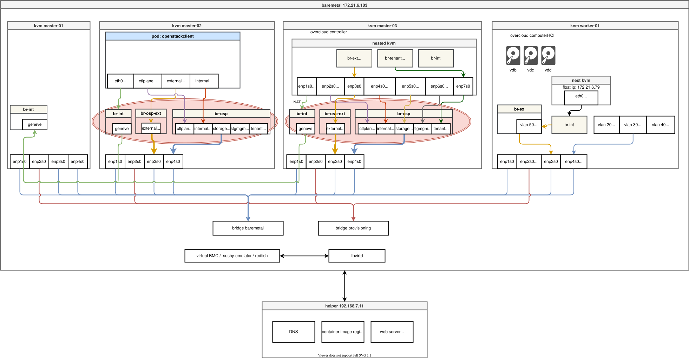
# network link name no longer than 15
# https://access.redhat.com/solutions/2425471
# https://github.com/openstack-k8s-operators/osp-director-dev-tools/blob/osp16_tech_preview/ansible/templates/osp/tripleo_heat_envs/vlan/network-environment.yaml.j2
# https://github.com/openstack-k8s-operators/osp-director-dev-tools/blob/master/ansible/templates/osp/netconfig/osnetconfig.yaml.j2
cat << EOF > ${BASE_DIR}/data/install/openstacknetconfig.yaml
apiVersion: osp-director.openstack.org/v1beta1
kind: OpenStackNetConfig
metadata:
name: openstacknetconfig
spec:
attachConfigurations:
br-osp:
nodeNetworkConfigurationPolicy:
nodeSelector:
node-role.kubernetes.io/master: ""
desiredState:
interfaces:
- bridge:
options:
stp:
enabled: false
port:
- name: enp4s0
description: Linux bridge with enp4s0 as a port
name: br-osp
state: up
type: linux-bridge
mtu: 1500
br-osp-ex:
nodeNetworkConfigurationPolicy:
nodeSelector:
node-role.kubernetes.io/master: ""
desiredState:
interfaces:
- bridge:
options:
stp:
enabled: false
port:
- name: enp3s0
description: Linux bridge with enp3s0 as a port
name: br-osp-ex
state: up
type: linux-bridge
mtu: 1500
# optional DnsServers list
dnsServers:
- 192.168.7.11
# optional DnsSearchDomains list
dnsSearchDomains:
- osp-demo.redhat.ren
- some.other.domain
# DomainName of the OSP environment
domainName: osp-demo.redhat.ren
networks:
- name: Control
nameLower: ctlplane
subnets:
- name: ctlplane
ipv4:
allocationEnd: 192.168.7.60
allocationStart: 192.168.7.40
cidr: 192.168.7.0/24
gateway: 192.168.7.11
attachConfiguration: br-osp
- name: InternalApi
nameLower: internal_api
mtu: 1350
subnets:
- name: internal_api
attachConfiguration: br-osp
vlan: 20
ipv4:
allocationEnd: 172.17.0.250
allocationStart: 172.17.0.10
cidr: 172.17.0.0/24
- name: External
nameLower: external
subnets:
- name: external
ipv4:
allocationEnd: 172.21.6.60
allocationStart: 172.21.6.40
cidr: 172.21.6.0/24
gateway: 172.21.6.254
attachConfiguration: br-osp-ex
- name: Storage
nameLower: storage
mtu: 1500
subnets:
- name: storage
ipv4:
allocationEnd: 172.18.0.250
allocationStart: 172.18.0.10
cidr: 172.18.0.0/24
vlan: 30
attachConfiguration: br-osp
- name: StorageMgmt
nameLower: storage_mgmt
mtu: 1500
subnets:
- name: storage_mgmt
ipv4:
allocationEnd: 172.19.0.250
allocationStart: 172.19.0.10
cidr: 172.19.0.0/24
vlan: 40
attachConfiguration: br-osp
- name: Tenant
nameLower: tenant
vip: False
mtu: 1500
subnets:
- name: tenant
ipv4:
allocationEnd: 172.20.0.250
allocationStart: 172.20.0.10
cidr: 172.20.0.0/24
vlan: 50
attachConfiguration: br-osp
EOF
oc create --save-config -f ${BASE_DIR}/data/install/openstacknetconfig.yaml -n openstack
# oc delete -f ${BASE_DIR}/data/install/openstacknetconfig.yaml -n openstack
# oc apply -f ${BASE_DIR}/data/install/openstacknetconfig.yaml -n openstack
oc get openstacknetconfig/openstacknetconfig -n openstack
# NAME ATTACHCONFIG DESIRED ATTACHCONFIG READY NETWORKS DESIRED NETWORKS READY PHYSNETWORKS DESIRED PHYSNETWORKS READY STATUS REASON
# openstacknetconfig 2 2 6 6 1 1 Configured OpenStackNetConfig openstacknetconfig all resources configured
# oc get openstacknetattach -n openstack
oc get openstacknet -n openstack
# NAME CIDR DOMAIN MTU VLAN VIP GATEWAY ROUTES RESERVED IPS STATUS
# ctlplane 192.168.7.0/24 ctlplane.osp-demo.redhat.ren 1500 0 true 192.168.7.11 [] 0 Configured
# external 172.21.6.0/24 external.osp-demo.redhat.ren 1500 0 true 172.21.6.254 [] 0 Configured
# internalapi 172.17.0.0/24 internalapi.osp-demo.redhat.ren 1350 20 true [] 0 Configured
# storage 172.18.0.0/24 storage.osp-demo.redhat.ren 1500 30 true [] 0 Configured
# storagemgmt 172.19.0.0/24 storagemgmt.osp-demo.redhat.ren 1500 40 true [] 0 Configured
# tenant 172.20.0.0/24 tenant.osp-demo.redhat.ren 1500 50 false [] 0 Configured
oc get network-attachment-definitions -n openstack
# NAME AGE
# ctlplane 2m12s
# ctlplane-static 2m11s
# external 2m11s
# external-static 2m11s
# internalapi 2m11s
# internalapi-static 2m11s
# storage 2m11s
# storage-static 2m11s
# storagemgmt 2m10s
# storagemgmt-static 2m10s
# tenant 2m10s
# tenant-static 2m10s
oc get nncp
# NAME STATUS REASON
# br-osp Available SuccessfullyConfigured
# br-osp-ex Available SuccessfullyConfigureddeploy controller
我们定义一个单节点的controller，这个定义保存后，openshift会通过cnv启动一个kvm，这个kvm会使用我们之前上传的rhel镜像作为操作系统，启动完成以后，就以一个空的操作系统，静静的运行在那里。
同时，他会运行一个openstack client的pod，我们后面日常对openstack的操作，就都会在这个openstack client里面。
注意，这里面文档有bug。文档里面的版本是v1beta2，而我们的镜像里面只有v1beta1，所以我们需要对配置做一些小的调整。
这一步操作，对应到架构图，是这部分：
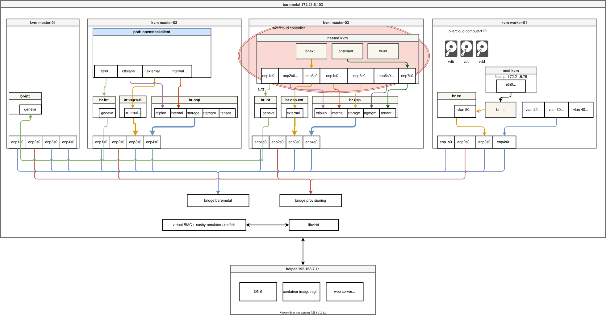
# here version mismatch with official document.
# we use old official document, which can't be found. :(
cat << EOF > ${BASE_DIR}/data/install/openstack-controller.yaml
apiVersion: osp-director.openstack.org/v1beta1
kind: OpenStackControlPlane
metadata:
name: overcloud
namespace: openstack
spec:
# openStackClientImageURL: registry.redhat.io/rhosp-beta/openstack-tripleoclient:16.2
openStackClientNetworks:
- ctlplane
- external
- internal_api
openStackClientStorageClass: redhat-ren-nfs
passwordSecret: userpassword
gitSecret: git-secret
virtualMachineRoles:
controller:
roleName: Controller
roleCount: 1
networks:
- ctlplane
- internal_api
- external
- tenant
- storage
- storage_mgmt
cores: 6
memory: 12
diskSize: 60
baseImageVolumeName: openstack-base-img
storageClass: redhat-ren-nfs
EOF
oc create --save-config -f ${BASE_DIR}/data/install/openstack-controller.yaml -n openstack
# oc delete -f ${BASE_DIR}/data/install/openstack-controller.yaml -n openstack
# oc apply -f ${BASE_DIR}/data/install/openstack-controller.yaml -n openstack
# here, it will take a long time, because it will clone pvc to 3 pvc
# half to 1 hour, based on your disk performance.
oc get openstackcontrolplane/overcloud -n openstack
# NAME VMSETS DESIRED VMSETS READY CLIENT READY STATUS REASON
# overcloud 1 1 true Provisioned All requested OSVMSets have been provisioned
oc get openstackcontrolplane -n openstack
# NAME VMSETS DESIRED VMSETS READY CLIENT READY STATUS REASON
# overcloud 1 1 true Provisioned All requested OSVMSets have been provisioned
oc get openstackvmsets -n openstack
# NAME DESIRED READY STATUS REASON
# controller 3 3 Provisioned All requested VirtualMachines have been provisioned
oc get virtualmachines -n openstack
# NAME AGE STATUS READY
# controller-0 107m Running True
# controller-1 107m Running True
# controller-2 107m Running True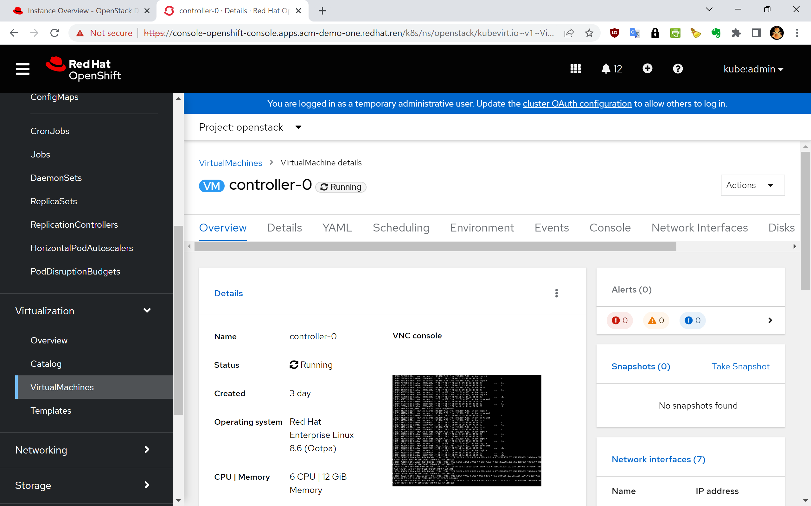
define openstack install script
接着，我们按照官方文档，定义openstack install script，这个安装脚本，是配置computer节点网络的。
官方文档里面有个bug，就是没定义StorageMgmt网络，我们补充进去就好了。
安装脚本的定义分好几个步骤，有几个步骤，是把官方文档copy past进去，还有步骤，是在openstack client pod里面，创建模板，然后导出，总之，按照步骤做就好，并不难。
# on helper
mkdir -p ${BASE_DIR}/data/custom_templates
mkdir -p ${BASE_DIR}/data/custom_environment_files
/bin/rm -rf ${BASE_DIR}/data/custom_templates/*
/bin/rm -rf ${BASE_DIR}/data/custom_environment_files/*
cat << 'EOF' > ${BASE_DIR}/data/custom_templates/net-config-two-nic-vlan-computehci.yaml
heat_template_version: rocky
description: >
Software Config to drive os-net-config to configure VLANs for the Compute role.
parameters:
ControlPlaneIp:
default: ''
description: IP address/subnet on the ctlplane network
type: string
ControlPlaneSubnetCidr:
default: ''
description: >
The subnet CIDR of the control plane network. (The parameter is
automatically resolved from the ctlplane subnet's cidr attribute.)
type: string
ControlPlaneDefaultRoute:
default: ''
description: The default route of the control plane network. (The parameter
is automatically resolved from the ctlplane subnet's gateway_ip attribute.)
type: string
ControlPlaneStaticRoutes:
default: []
description: >
Routes for the ctlplane network traffic.
JSON route e.g. [{'destination':'10.0.0.0/16', 'nexthop':'10.0.0.1'}]
Unless the default is changed, the parameter is automatically resolved
from the subnet host_routes attribute.
type: json
ControlPlaneMtu:
default: 1500
description: The maximum transmission unit (MTU) size(in bytes) that is
guaranteed to pass through the data path of the segments in the network.
(The parameter is automatically resolved from the ctlplane network's mtu attribute.)
type: number
StorageIpSubnet:
default: ''
description: IP address/subnet on the storage network
type: string
StorageNetworkVlanID:
default: 30
description: Vlan ID for the storage network traffic.
type: number
StorageMtu:
default: 1500
description: The maximum transmission unit (MTU) size(in bytes) that is
guaranteed to pass through the data path of the segments in the
Storage network.
type: number
StorageInterfaceRoutes:
default: []
description: >
Routes for the storage network traffic.
JSON route e.g. [{'destination':'10.0.0.0/16', 'nexthop':'10.0.0.1'}]
Unless the default is changed, the parameter is automatically resolved
from the subnet host_routes attribute.
type: json
StorageMgmtIpSubnet:
default: ''
description: IP address/subnet on the storage_mgmt network
type: string
StorageMgmtNetworkVlanID:
default: 40
description: Vlan ID for the storage_mgmt network traffic.
type: number
StorageMgmtMtu:
default: 1500
description: The maximum transmission unit (MTU) size(in bytes) that is
guaranteed to pass through the data path of the segments in the
StorageMgmt network.
type: number
StorageMgmtInterfaceRoutes:
default: []
description: >
Routes for the storage_mgmt network traffic.
JSON route e.g. [{'destination':'10.0.0.0/16', 'nexthop':'10.0.0.1'}]
Unless the default is changed, the parameter is automatically resolved
from the subnet host_routes attribute.
type: json
InternalApiIpSubnet:
default: ''
description: IP address/subnet on the internal_api network
type: string
InternalApiNetworkVlanID:
default: 20
description: Vlan ID for the internal_api network traffic.
type: number
InternalApiMtu:
default: 1500
description: The maximum transmission unit (MTU) size(in bytes) that is
guaranteed to pass through the data path of the segments in the
InternalApi network.
type: number
InternalApiInterfaceRoutes:
default: []
description: >
Routes for the internal_api network traffic.
JSON route e.g. [{'destination':'10.0.0.0/16', 'nexthop':'10.0.0.1'}]
Unless the default is changed, the parameter is automatically resolved
from the subnet host_routes attribute.
type: json
TenantIpSubnet:
default: ''
description: IP address/subnet on the tenant network
type: string
TenantNetworkVlanID:
default: 50
description: Vlan ID for the tenant network traffic.
type: number
TenantMtu:
default: 1500
description: The maximum transmission unit (MTU) size(in bytes) that is
guaranteed to pass through the data path of the segments in the
Tenant network.
type: number
TenantInterfaceRoutes:
default: []
description: >
Routes for the tenant network traffic.
JSON route e.g. [{'destination':'10.0.0.0/16', 'nexthop':'10.0.0.1'}]
Unless the default is changed, the parameter is automatically resolved
from the subnet host_routes attribute.
type: json
ExternalMtu:
default: 1500
description: The maximum transmission unit (MTU) size(in bytes) that is
guaranteed to pass through the data path of the segments in the
External network.
type: number
DnsServers: # Override this via parameter_defaults
default: []
description: >
DNS servers to use for the Overcloud (2 max for some implementations).
If not set the nameservers configured in the ctlplane subnet's
dns_nameservers attribute will be used.
type: comma_delimited_list
DnsSearchDomains: # Override this via parameter_defaults
default: []
description: A list of DNS search domains to be added (in order) to resolv.conf.
type: comma_delimited_list
resources:
MinViableMtu:
# This resource resolves the minimum viable MTU for interfaces, bonds and
# bridges that carry multiple VLANs. Each VLAN may have different MTU. The
# bridge, bond or interface must have an MTU to allow the VLAN with the
# largest MTU.
type: OS::Heat::Value
properties:
type: number
value:
yaql:
expression: $.data.max()
data:
- {get_param: ControlPlaneMtu}
- {get_param: StorageMtu}
- {get_param: StorageMgmtMtu}
- {get_param: InternalApiMtu}
- {get_param: TenantMtu}
- {get_param: ExternalMtu}
OsNetConfigImpl:
type: OS::Heat::SoftwareConfig
properties:
group: script
config:
str_replace:
template:
get_file: /usr/share/openstack-tripleo-heat-templates/network/scripts/run-os-net-config.sh
params:
$network_config:
network_config:
- type: interface
name: nic4
mtu:
get_attr: [MinViableMtu, value]
use_dhcp: false
dns_servers:
get_param: DnsServers
domain:
get_param: DnsSearchDomains
addresses:
- ip_netmask:
list_join:
- /
- - get_param: ControlPlaneIp
- get_param: ControlPlaneSubnetCidr
routes:
list_concat_unique:
- get_param: ControlPlaneStaticRoutes
- - default: true
next_hop:
get_param: ControlPlaneDefaultRoute
- type: vlan
mtu:
get_param: StorageMtu
device: nic4
vlan_id:
get_param: StorageNetworkVlanID
addresses:
- ip_netmask:
get_param: StorageIpSubnet
routes:
list_concat_unique:
- get_param: StorageInterfaceRoutes
- type: vlan
device: nic4
mtu:
get_param: StorageMgmtMtu
vlan_id:
get_param: StorageMgmtNetworkVlanID
addresses:
- ip_netmask:
get_param: StorageMgmtIpSubnet
routes:
list_concat_unique:
- get_param: StorageMgmtInterfaceRoutes
- type: vlan
mtu:
get_param: InternalApiMtu
device: nic4
vlan_id:
get_param: InternalApiNetworkVlanID
addresses:
- ip_netmask:
get_param: InternalApiIpSubnet
routes:
list_concat_unique:
- get_param: InternalApiInterfaceRoutes
- type: ovs_bridge
# This will default to br-ex, anything else requires specific
# bridge mapping entries for it to be used.
name: bridge_name
mtu:
get_param: ExternalMtu
use_dhcp: false
members:
- type: interface
name: nic3
mtu:
get_param: ExternalMtu
use_dhcp: false
primary: true
- type: vlan
mtu:
get_param: TenantMtu
vlan_id:
get_param: TenantNetworkVlanID
addresses:
- ip_netmask:
get_param: TenantIpSubnet
routes:
list_concat_unique:
- get_param: TenantInterfaceRoutes
outputs:
OS::stack_id:
description: The OsNetConfigImpl resource.
value:
get_resource: OsNetConfigImpl
EOF
oc rsh -n openstack openstackclient
# in the shell
unset OS_CLOUD
cd /home/cloud-admin/
openstack overcloud roles generate Controller ComputeHCI > roles_data.yaml
exit
oc cp openstack/openstackclient:home/cloud-admin/roles_data.yaml ${BASE_DIR}/data/custom_templates/roles_data.yaml
cd ${BASE_DIR}/data/custom_templates
tar -cvzf custom-config.tar.gz *.yaml
oc delete configmap tripleo-tarball-config -n openstack
oc create configmap tripleo-tarball-config --from-file=custom-config.tar.gz -n openstack
oc get configmap/tripleo-tarball-config -n openstack
# NAME DATA AGE
# tripleo-tarball-config 1 7s
cat << EOF > ${BASE_DIR}/data/custom_environment_files/network-environment.yaml
resource_registry:
OS::TripleO::ComputeHCI::Net::SoftwareConfig: net-config-two-nic-vlan-computehci.yaml
# parameter_defaults:
# # self define
# NeutronBridgeMappings: datacentre:br-osp-ex
EOF
cat << EOF > ${BASE_DIR}/data/custom_environment_files/compute-hci.yaml
resource_registry:
OS::TripleO::Services::CephMgr: deployment/ceph-ansible/ceph-mgr.yaml
OS::TripleO::Services::CephMon: deployment/ceph-ansible/ceph-mon.yaml
OS::TripleO::Services::CephOSD: deployment/ceph-ansible/ceph-osd.yaml
OS::TripleO::Services::CephClient: deployment/ceph-ansible/ceph-client.yaml
parameter_defaults:
# needed for now because of the repo used to create tripleo-deploy image
CephAnsibleRepo: "rhelosp-ceph-4-tools"
CephAnsiblePlaybookVerbosity: 3
CinderEnableIscsiBackend: false
CinderEnableRbdBackend: true
CinderBackupBackend: ceph
CinderEnableNfsBackend: false
NovaEnableRbdBackend: true
GlanceBackend: rbd
CinderRbdPoolName: "volumes"
NovaRbdPoolName: "vms"
GlanceRbdPoolName: "images"
CephPoolDefaultPgNum: 32
CephPoolDefaultSize: 2
CephAnsibleDisksConfig:
devices:
- '/dev/vdb'
- '/dev/vdc'
- '/dev/vdd'
osd_scenario: lvm
osd_objectstore: bluestore
CephAnsibleExtraConfig:
is_hci: true
CephConfigOverrides:
rgw_swift_enforce_content_length: true
rgw_swift_versioning_enabled: true
EOF
oc delete configmap -n openstack heat-env-config
oc create configmap -n openstack heat-env-config --from-file=${BASE_DIR}/data/custom_environment_files/ --dry-run=client -o yaml | oc apply -f -
oc get configmap/heat-env-config -n openstack
# NAME DATA AGE
# heat-env-config 2 4sdefine computer node
接下来，我们定义computer node。在定义computer node之前，我们openshift集群是有一个worker节点的，这个worker节点是空的，啥也没有，我们通过定义OpenStackBaremetalSet，调用openshift的metal3相关的功能，用我们指定的镜像，把这个worker节点刷成一个rhel节点。
这一步操作，对应到架构图，是这部分：
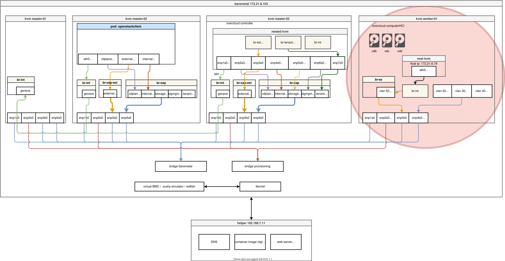
cat << EOF > ${BASE_DIR}/data/install/openstack-hcicompute.yaml
apiVersion: osp-director.openstack.org/v1beta1
kind: OpenStackBaremetalSet
metadata:
name: computehci
namespace: openstack
spec:
count: 1
baseImageUrl: http://192.168.7.11:8080/rhel-8.6-x86_64-kvm-wzh.qcow2
deploymentSSHSecret: osp-controlplane-ssh-keys
ctlplaneInterface: enp4s0
networks:
- ctlplane
- internal_api
- tenant
- storage
- storage_mgmt
roleName: ComputeHCI
passwordSecret: userpassword
EOF
oc create --save-config -f ${BASE_DIR}/data/install/openstack-hcicompute.yaml -n openstack
# oc delete -f ${BASE_DIR}/data/install/openstack-hcicompute.yaml -n openstack
# very tricky, after read source code, there is a buggy logic to check the online to false.
# cat << EOF > ${BASE_DIR}/data/install/patch.yaml
# spec:
# online: fales
# EOF
# oc patch -n openshift-machine-api BareMetalHost/ocp4-ipi-osp-worker-01 --type merge --patch-file=${BASE_DIR}/data/install/patch.yaml
# ssh into the worker-1, and add public access ip address
# so it can download ironic agent podman image
# and the ironic agent will write base image to disk
# but first, it will boot using coreos live iso
# ssh -i id_rsa core@172.22.0.199
# sudo -i
# nmcli con add ifname enp1s0 con-name enp1s0 type ethernet ipv4.method manual ipv4.addresses 192.168.7.26/24 ipv4.dns 192.168.7.11
# nmcli con up enp1s0
# /bin/qemu-img convert -O host_device -t directsync -S 0 -W /tmp/compressed-rhel-8.6-x86_64-kvm-wzh.qcow2 /dev/vda
# sgdisk -e /dev/vda
# sgdisk -Z /dev/vda3
oc describe crd openstackbaremetalset
oc get openstackbaremetalset -n openstack
# NAME DESIRED READY STATUS REASON
# computehci 1 1 Provisioned All requested BaremetalHosts have been provisioned
oc get openstackbaremetalset/computehci -n openstack
# NAME DESIRED READY STATUS REASON
# computehci 1 1 Provisioned All requested BaremetalHosts have been provisioned
oc get baremetalhosts -n openshift-machine-api
# NAME STATE CONSUMER ONLINE ERROR AGE
# ocp4-ipi-osp-master-01 externally provisioned acm-demo-one-8zwdl-master-0 true 126m
# ocp4-ipi-osp-master-02 externally provisioned acm-demo-one-8zwdl-master-1 true 126m
# ocp4-ipi-osp-master-03 externally provisioned acm-demo-one-8zwdl-master-2 true 126m
# ocp4-ipi-osp-worker-01 provisioned computehci true 54m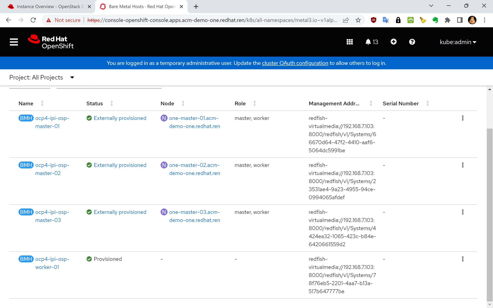
patch for openstack nodes
在继续操作之前，我们需要给已有的openstack 节点，包括controller, computer，打一些配置上去，因为我们是离线环境，主要就是把repo yum源，还有container registry源，都指向内网的环境。
###########################
# add repo for osp nodes
oc rsh -n openstack openstackclient
cd /home/cloud-admin
VAR_URL=http://192.168.7.11:5000/osp.repo
# ansible-playbook -i /home/cloud-admin/ctlplane-ansible-inventory ./rhsm.yaml
ansible -i /home/cloud-admin/ctlplane-ansible-inventory overcloud -a "sudo dnf config-manager --add-repo $VAR_URL"
ansible -i /home/cloud-admin/ctlplane-ansible-inventory overcloud -a "sudo mkdir -p /etc/cni/net.d"
scp root@192.168.7.11:/data/ocp4/image.registries.conf ./
sed -i 's/nexus.infra.redhat.ren/192.168.7.11/g' image.registries.conf
ansible -i /home/cloud-admin/ctlplane-ansible-inventory overcloud -a "sudo mkdir -p /etc/containers/registries.conf.d/"
ansible -i /home/cloud-admin/ctlplane-ansible-inventory overcloud -b -m copy -a "src=./image.registries.conf dest=/etc/containers/registries.conf.d/image.registries.conf"
cat << EOF > ./policy.json
{
"default": [
{
"type": "insecureAcceptAnything"
}
],
"transports":
{
"docker-daemon":
{
"": [{"type":"insecureAcceptAnything"}]
}
}
}
EOF
ansible -i /home/cloud-admin/ctlplane-ansible-inventory overcloud -b -m copy -a "src=./policy.json dest=/etc/containers/policy.json"generate ansible playbooks
我们终于到了最后的步骤了，我们将要创建安装用的ansible playbook。
在这里面，有一个osp operator的小bug，因为我们的git ssh端口不是22端口，所以我们的git uri形式不是 git@server:root/openstack.git , 而是 ssh://git@quaylab.infra.redhat.ren:10022/root/openstack.git ，这就造成的脚本解析错误，暂时没有好办法解决，只能到pod里面去，把ssh config文件patch一下。
cat << EOF > ${BASE_DIR}/data/install/openstack-config-generator.yaml
apiVersion: osp-director.openstack.org/v1beta1
kind: OpenStackConfigGenerator
metadata:
name: default
namespace: openstack
spec:
enableFencing: false
gitSecret: git-secret
# imageURL: registry.redhat.io/rhosp-rhel8/openstack-tripleoclient:16.2
heatEnvConfigMap: heat-env-config
# List of heat environment files to include from tripleo-heat-templates/environments
# heatEnvs:
# - ssl/tls-endpoints-public-dns.yaml
# - ssl/enable-tls.yaml
tarballConfigMap: tripleo-tarball-config
# interactive: true
EOF
oc create --save-config -f ${BASE_DIR}/data/install/openstack-config-generator.yaml -n openstack
# oc delete -f ${BASE_DIR}/data/install/openstack-config-generator.yaml -n openstack
oc get openstackconfiggenerator/default -n openstack
# NAME STATUS
# default Initializing
# fix for ssh connect bugs
# if the git host on ssh other than port 22
# the osp script will buggy
watch oc get pod -l job-name=generate-config-default
oc rsh $(oc get pod -o name -l job-name=generate-config-default)
# ls -la /home/cloud-admin/
cat /home/cloud-admin/.ssh/config
cat << EOF >> /home/cloud-admin/.ssh/config
Host quaylab.infra.redhat.ren
User root
IdentityFile /home/cloud-admin/.ssh/git_id_rsa
StrictHostKeyChecking no
EOF
# git clone ssh://git@quaylab.infra.redhat.ren:10022/root/openstack.git
oc get openstackconfiggenerator/default -n openstack
# NAME STATUS
# default Generatingrun ansible playbooks
我们将要在openstack client pod里面，运行ansible playbook脚本，安装部署我们的overcloud。在这里，又和官方文档有点不一样的，官方文档使用的OpenStackDeploy，我们的operator里面还没有，所以我们需要手动运行。
由于我们的controller是nested kvm，运行起来那是非常慢，整个安装过程在作者的home lab里面要2个多小时。
# official doc versoin mis-match
# there is no openstackDeploy CRD for current osd operator
# cat << EOF > ${BASE_DIR}/data/install/openstack-deployment.yaml
# apiVersion: osp-director.openstack.org/v1beta1
# kind: OpenStackDeploy
# metadata:
# name: default
# spec:
# configVersion: n54dh548h5d7h5f5h648h95h5b5h686h64bhf8h566h65fh5f7h674hdchdh59dh58hf7h667h7h57fh85h557hdh59bh5dh54ch7dh547h579hcfq
# configGenerator: default
# EOF
# oc create --save-config -f ${BASE_DIR}/data/install/openstack-deployment.yaml -n openstack
oc rsh -n openstack openstackclient
cd /home/cloud-admin
ansible -i /home/cloud-admin/ctlplane-ansible-inventory overcloud -a "sudo dnf -y install python3 lvm2"
# run ansible driven OpenStack deployment
cat << EOF >> /home/cloud-admin/.ssh/config
Host quaylab.infra.redhat.ren
User root
IdentityFile /home/cloud-admin/.ssh/git_id_rsa
StrictHostKeyChecking no
EOF
chmod 600 /home/cloud-admin/.ssh/config
# it is better to run on local machine through crictl exec -it **** bash
./tripleo-deploy.sh -a
/bin/cp tripleo-deploy.sh tripleo-deploy.wzh.sh
sed -i 's/ansible-playbook /ansible-playbook -v /g' tripleo-deploy.wzh.sh
./tripleo-deploy.wzh.sh -p
# because it is nested virtulization
# it will cost almost 2 hours to deploy
# debug
ssh cloud-admin@192.168.7.43
# podman pull registry.redhat.io/rhosp-rhel8/openstack-cron:16.2
# podman pull registry.redhat.io/rhosp-rhel8/openstack-ovn-controller:16.2
# podman pull registry.redhat.io/rhosp-rhel8/openstack-nova-libvirt:16.2
# podman pull registry.redhat.io/rhosp-rhel8/openstack-iscsid:16.2
# podman pull registry.redhat.io/rhosp-rhel8/openstack-nova-compute:16.2
# podman pull registry.redhat.io/rhosp-rhel8/openstack-neutron-metadata-agent-ovn:16.2
# access the webpage
oc get secret tripleo-passwords -o jsonpath='{.data.tripleo-overcloud-passwords\.yaml}' | base64 -d | grep AdminPassword
# AdminPassword: 9dhv6qr7xlsbkrzvlvvjtndks
# CephDashboardAdminPassword: 74rpbjqm8qt586v79rtcwhr2c
# CephGrafanaAdminPassword: hlg8k7m6fg2zqqvq799xpmsxx
# HeatStackDomainAdminPassword: flqfdp86gk7xf8rjh2f6nkxhl
# http://172.21.6.40/
# admin / ....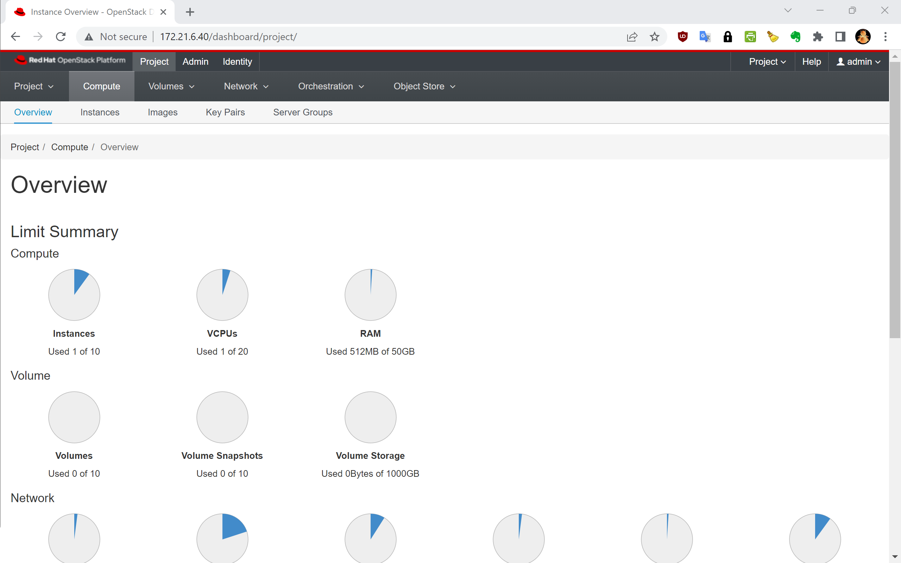
use the openstack overcloud
我们已经装好了一个openstack overcloud了，接下来，我们就使用一下这个overcloud，创建一个vm试试。
这一步操作，对应到架构图，是这部分：
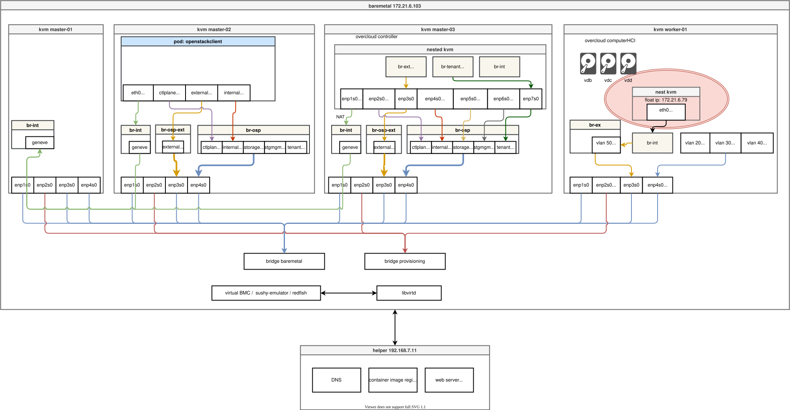
openstack endpoint list
# +----------------------------------+-----------+--------------+----------------+---------+-----------+-----------------------------------------------+
# | ID | Region | Service Name | Service Type | Enabled | Interface | URL |
# +----------------------------------+-----------+--------------+----------------+---------+-----------+-----------------------------------------------+
# | 0841809b67a84e8a9f8b5fe1c3fe78b0 | regionOne | glance | image | True | internal | http://172.17.0.10:9292 |
# | 0fc84999e6e948cf82d2abb1ff8ffbaf | regionOne | heat | orchestration | True | public | http://172.21.6.40:8004/v1/%(tenant_id)s |
# | 1447065d224943c4a3ff886c3bb8c4b3 | regionOne | heat | orchestration | True | internal | http://172.17.0.10:8004/v1/%(tenant_id)s |
# | 1c57db71dfcf438b8607cf2549929757 | regionOne | cinderv3 | volumev3 | True | admin | http://172.17.0.10:8776/v3/%(tenant_id)s |
# | 21e24d92d592457782f7c8b39b55ab41 | regionOne | nova | compute | True | public | http://172.21.6.40:8774/v2.1 |
# | 26e93f7d318149d492268d7abbeebb8c | regionOne | placement | placement | True | public | http://172.21.6.40:8778/placement |
# | 3338679b75b949b0810c807a3dd5b175 | regionOne | heat-cfn | cloudformation | True | admin | http://172.17.0.10:8000/v1 |
# | 459fa0db22ce4edcba52309bf5157bd6 | regionOne | nova | compute | True | internal | http://172.17.0.10:8774/v2.1 |
# | 494e26a5e80d40258e07a32d7f7cd527 | regionOne | placement | placement | True | admin | http://172.17.0.10:8778/placement |
# | 4a612665e36840eeb354ebfc1540d372 | regionOne | swift | object-store | True | internal | http://172.18.0.10:8080/v1/AUTH_%(tenant_id)s |
# | 4ca6bd346e714c86934de3fd80199490 | regionOne | glance | image | True | admin | http://172.17.0.10:9292 |
# | 6d1cc6552c4f4bd99b78cfa173f4d30e | regionOne | nova | compute | True | admin | http://172.17.0.10:8774/v2.1 |
# | 73a38a88baa342f0882fe846bcf20c23 | regionOne | keystone | identity | True | internal | http://172.17.0.10:5000 |
# | 7a194566071140f1a4a88da42e131520 | regionOne | cinderv3 | volumev3 | True | internal | http://172.17.0.10:8776/v3/%(tenant_id)s |
# | 8058f1fd49b6474bab4b2c889bfb8769 | regionOne | cinderv3 | volumev3 | True | public | http://172.21.6.40:8776/v3/%(tenant_id)s |
# | 8158d87f9fb648939e70ebf84398dcb2 | regionOne | neutron | network | True | admin | http://172.17.0.10:9696 |
# | 8b6ccf76ea67428ba49431cb58a7d749 | regionOne | cinderv2 | volumev2 | True | admin | http://172.17.0.10:8776/v2/%(tenant_id)s |
# | 8e462b16b50840c380d20a04c05ef19d | regionOne | heat-cfn | cloudformation | True | internal | http://172.17.0.10:8000/v1 |
# | 96f9cc117a744e74af9a8c889bdcc294 | regionOne | neutron | network | True | internal | http://172.17.0.10:9696 |
# | 97996f0256db4ecd97d24dd09d122fed | regionOne | swift | object-store | True | admin | http://172.18.0.10:8080 |
# | a874381f22ef480eb858c2062ee0bc84 | regionOne | cinderv2 | volumev2 | True | internal | http://172.17.0.10:8776/v2/%(tenant_id)s |
# | ae9e4589fda4420ebfac1e4d385ebf39 | regionOne | heat-cfn | cloudformation | True | public | http://172.21.6.40:8000/v1 |
# | c25acb62d7fd4c0c9450c62f99e257e9 | regionOne | neutron | network | True | public | http://172.21.6.40:9696 |
# | e16700f441b64798beca1d95982743e0 | regionOne | keystone | identity | True | public | http://172.21.6.40:5000 |
# | e433ea6ae0bf4ce19b2fe5424204d35b | regionOne | heat | orchestration | True | admin | http://172.17.0.10:8004/v1/%(tenant_id)s |
# | ef151edac10b4838909009e8892fa3a4 | regionOne | placement | placement | True | internal | http://172.17.0.10:8778/placement |
# | f31465304ea249f5a4888e52269c6891 | regionOne | keystone | identity | True | admin | http://192.168.7.40:35357 |
# | f42b5746d871425db507cf32f4d7d536 | regionOne | cinderv2 | volumev2 | True | public | http://172.21.6.40:8776/v2/%(tenant_id)s |
# | fbe5ee79ad504ef995d111bb2e76a032 | regionOne | swift | object-store | True | public | http://172.21.6.40:8080/v1/AUTH_%(tenant_id)s |
# | fdefc2aa2c36430294c7c436662cfb16 | regionOne | glance | image | True | public | http://172.21.6.40:9292 |
# +----------------------------------+-----------+--------------+----------------+---------+-----------+-----------------------------------------------+
openstack flavor create --ram 512 --disk 1 --vcpu 1 --public tiny
# +----------------------------+--------------------------------------+
# | Field | Value |
# +----------------------------+--------------------------------------+
# | OS-FLV-DISABLED:disabled | False |
# | OS-FLV-EXT-DATA:ephemeral | 0 |
# | disk | 1 |
# | id | 511a9cc2-9f68-4850-a3e1-de40a68db8d7 |
# | name | tiny |
# | os-flavor-access:is_public | True |
# | properties | |
# | ram | 512 |
# | rxtx_factor | 1.0 |
# | swap | |
# | vcpus | 1 |
# +----------------------------+--------------------------------------+
#####################
# on helper
wget https://download.cirros-cloud.net/0.4.0/cirros-0.4.0-x86_64-disk.img
oc cp /data/swap/cirros-0.4.0-x86_64-disk.img openstack/openstackclient:/home/cloud-admin/swap/
# end on helper
#####################
openstack image create cirros --container-format bare --disk-format qcow2 --public --file /home/cloud-admin/swap/cirros-0.4.0-x86_64-disk.img
# +------------------+------------------------------------------------------------------------------------------------------------------------------------------------------------------------------------------------------------------------------------------------------------------------------------------------------------------------------------------------------------------------------------------------------------------------------------------------------------------------------------------------+
# | Field | Value |
# +------------------+------------------------------------------------------------------------------------------------------------------------------------------------------------------------------------------------------------------------------------------------------------------------------------------------------------------------------------------------------------------------------------------------------------------------------------------------------------------------------------------------+
# | checksum | 443b7623e27ecf03dc9e01ee93f67afe |
# | container_format | bare |
# | created_at | 2022-11-18T15:38:57Z |
# | disk_format | qcow2 |
# | file | /v2/images/2d66e2af-8fcb-4d33-8232-5949787a6164/file |
# | id | 2d66e2af-8fcb-4d33-8232-5949787a6164 |
# | min_disk | 0 |
# | min_ram | 0 |
# | name | cirros |
# | owner | 3647f67bbd5844e38e13f418143c4b57 |
# | properties | direct_url='rbd://1438a42b-6d15-4143-8e73-8d9f2c9488be/images/2d66e2af-8fcb-4d33-8232-5949787a6164/snap', locations='[{'url': 'rbd://1438a42b-6d15-4143-8e73-8d9f2c9488be/images/2d66e2af-8fcb-4d33-8232-5949787a6164/snap', 'metadata': {'store': 'default_backend'}}]', os_hash_algo='sha512', os_hash_value='6513f21e44aa3da349f248188a44bc304a3653a04122d8fb4535423c8e1d14cd6a153f735bb0982e2161b5b5186106570c17a9e58b64dd39390617cd5a350f78', os_hidden='False', stores='default_backend' |
# | protected | False |
# | schema | /v2/schemas/image |
# | size | 12716032 |
# | status | active |
# | tags | |
# | updated_at | 2022-11-18T15:39:03Z |
# | virtual_size | None |
# | visibility | public |
# +------------------+------------------------------------------------------------------------------------------------------------------------------------------------------------------------------------------------------------------------------------------------------------------------------------------------------------------------------------------------------------------------------------------------------------------------------------------------------------------------------------------------+
ssh-keygen -m PEM -t rsa -b 2048 -f ~/.ssh/id_rsa_pem
openstack keypair create --public-key ~/.ssh/id_rsa_pem.pub default
# +-------------+-------------------------------------------------+
# | Field | Value |
# +-------------+-------------------------------------------------+
# | fingerprint | 64:34:f6:33:9f:87:10:27:d6:5f:80:4c:e7:03:a7:2a |
# | name | default |
# | user_id | 0049debaf5d34a83a54486fd418b6981 |
# +-------------+-------------------------------------------------+
openstack security group create basic
# +-----------------+---------------------------------------------------------------------------------------------------------------------------------------------------------------------------+
# | Field | Value |
# +-----------------+---------------------------------------------------------------------------------------------------------------------------------------------------------------------------+
# | created_at | 2022-11-18T15:40:45Z |
# | description | basic |
# | id | c3f80883-589f-4cf4-b1b5-059e7966ae82 |
# | location | cloud='overcloud', project.domain_id=, project.domain_name='Default', project.id='3647f67bbd5844e38e13f418143c4b57', project.name='admin', region_name='regionOne', zone= |
# | name | basic |
# | project_id | 3647f67bbd5844e38e13f418143c4b57 |
# | revision_number | 1 |
# | rules | created_at='2022-11-18T15:40:46Z', direction='egress', ethertype='IPv4', id='184384ca-4048-4711-9419-b2a9c3c685f8', updated_at='2022-11-18T15:40:46Z' |
# | | created_at='2022-11-18T15:40:46Z', direction='egress', ethertype='IPv6', id='19cf0c67-6724-49e3-a13c-e366e662b63e', updated_at='2022-11-18T15:40:46Z' |
# | tags | [] |
# | updated_at | 2022-11-18T15:40:46Z |
# +-----------------+---------------------------------------------------------------------------------------------------------------------------------------------------------------------------+
openstack security group rule create basic --protocol tcp --dst-port 22:22 --remote-ip 0.0.0.0/0
# +-------------------+---------------------------------------------------------------------------------------------------------------------------------------------------------------------------+
# | Field | Value |
# +-------------------+---------------------------------------------------------------------------------------------------------------------------------------------------------------------------+
# | created_at | 2022-11-18T15:41:24Z |
# | description | |
# | direction | ingress |
# | ether_type | IPv4 |
# | id | a44aa3ee-9fb3-4559-a655-eb90ea974cf8 |
# | location | cloud='overcloud', project.domain_id=, project.domain_name='Default', project.id='3647f67bbd5844e38e13f418143c4b57', project.name='admin', region_name='regionOne', zone= |
# | name | None |
# | port_range_max | 22 |
# | port_range_min | 22 |
# | project_id | 3647f67bbd5844e38e13f418143c4b57 |
# | protocol | tcp |
# | remote_group_id | None |
# | remote_ip_prefix | 0.0.0.0/0 |
# | revision_number | 0 |
# | security_group_id | c3f80883-589f-4cf4-b1b5-059e7966ae82 |
# | tags | [] |
# | updated_at | 2022-11-18T15:41:24Z |
# +-------------------+---------------------------------------------------------------------------------------------------------------------------------------------------------------------------+
openstack security group rule create --protocol icmp basic
# +-------------------+---------------------------------------------------------------------------------------------------------------------------------------------------------------------------+
# | Field | Value |
# +-------------------+---------------------------------------------------------------------------------------------------------------------------------------------------------------------------+
# | created_at | 2022-11-18T15:42:26Z |
# | description | |
# | direction | ingress |
# | ether_type | IPv4 |
# | id | dfe1760d-c76e-4797-9bbe-cf5cbb5a8386 |
# | location | cloud='overcloud', project.domain_id=, project.domain_name='Default', project.id='3647f67bbd5844e38e13f418143c4b57', project.name='admin', region_name='regionOne', zone= |
# | name | None |
# | port_range_max | None |
# | port_range_min | None |
# | project_id | 3647f67bbd5844e38e13f418143c4b57 |
# | protocol | icmp |
# | remote_group_id | None |
# | remote_ip_prefix | 0.0.0.0/0 |
# | revision_number | 0 |
# | security_group_id | c3f80883-589f-4cf4-b1b5-059e7966ae82 |
# | tags | [] |
# | updated_at | 2022-11-18T15:42:26Z |
# +-------------------+---------------------------------------------------------------------------------------------------------------------------------------------------------------------------+
openstack security group rule create --protocol udp --dst-port 53:53 basic
# +-------------------+---------------------------------------------------------------------------------------------------------------------------------------------------------------------------+
# | Field | Value |
# +-------------------+---------------------------------------------------------------------------------------------------------------------------------------------------------------------------+
# | created_at | 2022-11-18T15:42:58Z |
# | description | |
# | direction | ingress |
# | ether_type | IPv4 |
# | id | 339c1bfd-e812-472d-84db-77ba47425dfc |
# | location | cloud='overcloud', project.domain_id=, project.domain_name='Default', project.id='3647f67bbd5844e38e13f418143c4b57', project.name='admin', region_name='regionOne', zone= |
# | name | None |
# | port_range_max | 53 |
# | port_range_min | 53 |
# | project_id | 3647f67bbd5844e38e13f418143c4b57 |
# | protocol | udp |
# | remote_group_id | None |
# | remote_ip_prefix | 0.0.0.0/0 |
# | revision_number | 0 |
# | security_group_id | c3f80883-589f-4cf4-b1b5-059e7966ae82 |
# | tags | [] |
# | updated_at | 2022-11-18T15:42:58Z |
# +-------------------+---------------------------------------------------------------------------------------------------------------------------------------------------------------------------+
openstack network create --external --provider-physical-network datacentre --provider-network-type flat public
# +---------------------------+---------------------------------------------------------------------------------------------------------------------------------------------------------------------------+
# | Field | Value |
# +---------------------------+---------------------------------------------------------------------------------------------------------------------------------------------------------------------------+
# | admin_state_up | UP |
# | availability_zone_hints | |
# | availability_zones | |
# | created_at | 2022-11-18T15:47:04Z |
# | description | |
# | dns_domain | |
# | id | 38ae7119-1628-45c6-8763-24dd5eb967cc |
# | ipv4_address_scope | None |
# | ipv6_address_scope | None |
# | is_default | False |
# | is_vlan_transparent | None |
# | location | cloud='overcloud', project.domain_id=, project.domain_name='Default', project.id='3647f67bbd5844e38e13f418143c4b57', project.name='admin', region_name='regionOne', zone= |
# | mtu | 1500 |
# | name | public |
# | port_security_enabled | True |
# | project_id | 3647f67bbd5844e38e13f418143c4b57 |
# | provider:network_type | flat |
# | provider:physical_network | datacentre |
# | provider:segmentation_id | None |
# | qos_policy_id | None |
# | revision_number | 1 |
# | router:external | External |
# | segments | None |
# | shared | False |
# | status | ACTIVE |
# | subnets | |
# | tags | |
# | updated_at | 2022-11-18T15:47:06Z |
# +---------------------------+---------------------------------------------------------------------------------------------------------------------------------------------------------------------------+
openstack network create --internal private
# +---------------------------+---------------------------------------------------------------------------------------------------------------------------------------------------------------------------+
# | Field | Value |
# +---------------------------+---------------------------------------------------------------------------------------------------------------------------------------------------------------------------+
# | admin_state_up | UP |
# | availability_zone_hints | |
# | availability_zones | |
# | created_at | 2022-11-18T15:48:08Z |
# | description | |
# | dns_domain | |
# | id | a33927cd-7983-490b-8ab1-e70887abc398 |
# | ipv4_address_scope | None |
# | ipv6_address_scope | None |
# | is_default | False |
# | is_vlan_transparent | None |
# | location | cloud='overcloud', project.domain_id=, project.domain_name='Default', project.id='3647f67bbd5844e38e13f418143c4b57', project.name='admin', region_name='regionOne', zone= |
# | mtu | 1442 |
# | name | private |
# | port_security_enabled | True |
# | project_id | 3647f67bbd5844e38e13f418143c4b57 |
# | provider:network_type | geneve |
# | provider:physical_network | None |
# | provider:segmentation_id | 44033 |
# | qos_policy_id | None |
# | revision_number | 1 |
# | router:external | Internal |
# | segments | None |
# | shared | False |
# | status | ACTIVE |
# | subnets | |
# | tags | |
# | updated_at | 2022-11-18T15:48:08Z |
# +---------------------------+---------------------------------------------------------------------------------------------------------------------------------------------------------------------------+
export GATEWAY=172.21.6.254
# export STANDALONE_HOST=192.168.25.2
export PUBLIC_NETWORK_CIDR=172.21.6.0/24
export PRIVATE_NETWORK_CIDR=192.168.100.0/24
export PUBLIC_NET_START=172.21.6.70
export PUBLIC_NET_END=172.21.6.80
export DNS_SERVER=172.21.1.1
openstack subnet create public-net \
--subnet-range $PUBLIC_NETWORK_CIDR \
--no-dhcp \
--gateway $GATEWAY \
--allocation-pool start=$PUBLIC_NET_START,end=$PUBLIC_NET_END \
--network public
# +-------------------+---------------------------------------------------------------------------------------------------------------------------------------------------------------------------+
# | Field | Value |
# +-------------------+---------------------------------------------------------------------------------------------------------------------------------------------------------------------------+
# | allocation_pools | 172.21.6.70-172.21.6.80 |
# | cidr | 172.21.6.0/24 |
# | created_at | 2022-11-18T15:51:01Z |
# | description | |
# | dns_nameservers | |
# | enable_dhcp | False |
# | gateway_ip | 172.21.6.254 |
# | host_routes | |
# | id | 812aa93f-aa5b-42b5-97ef-63ae59e8c1da |
# | ip_version | 4 |
# | ipv6_address_mode | None |
# | ipv6_ra_mode | None |
# | location | cloud='overcloud', project.domain_id=, project.domain_name='Default', project.id='3647f67bbd5844e38e13f418143c4b57', project.name='admin', region_name='regionOne', zone= |
# | name | public-net |
# | network_id | 38ae7119-1628-45c6-8763-24dd5eb967cc |
# | prefix_length | None |
# | project_id | 3647f67bbd5844e38e13f418143c4b57 |
# | revision_number | 0 |
# | segment_id | None |
# | service_types | |
# | subnetpool_id | None |
# | tags | |
# | updated_at | 2022-11-18T15:51:01Z |
# +-------------------+---------------------------------------------------------------------------------------------------------------------------------------------------------------------------+
openstack subnet create private-net \
--subnet-range $PRIVATE_NETWORK_CIDR \
--network private
# +-------------------+---------------------------------------------------------------------------------------------------------------------------------------------------------------------------+
# | Field | Value |
# +-------------------+---------------------------------------------------------------------------------------------------------------------------------------------------------------------------+
# | allocation_pools | 192.168.100.2-192.168.100.254 |
# | cidr | 192.168.100.0/24 |
# | created_at | 2022-11-18T15:52:06Z |
# | description | |
# | dns_nameservers | |
# | enable_dhcp | True |
# | gateway_ip | 192.168.100.1 |
# | host_routes | |
# | id | 0a378d92-386f-437b-acf8-564595e394ba |
# | ip_version | 4 |
# | ipv6_address_mode | None |
# | ipv6_ra_mode | None |
# | location | cloud='overcloud', project.domain_id=, project.domain_name='Default', project.id='3647f67bbd5844e38e13f418143c4b57', project.name='admin', region_name='regionOne', zone= |
# | name | private-net |
# | network_id | a33927cd-7983-490b-8ab1-e70887abc398 |
# | prefix_length | None |
# | project_id | 3647f67bbd5844e38e13f418143c4b57 |
# | revision_number | 0 |
# | segment_id | None |
# | service_types | |
# | subnetpool_id | None |
# | tags | |
# | updated_at | 2022-11-18T15:52:06Z |
# +-------------------+---------------------------------------------------------------------------------------------------------------------------------------------------------------------------+
# NOTE: In this case an IP will be automatically assigned
# from the allocation pool for the subnet.
openstack router create vrouter
# +-------------------------+---------------------------------------------------------------------------------------------------------------------------------------------------------------------------+
# | Field | Value |
# +-------------------------+---------------------------------------------------------------------------------------------------------------------------------------------------------------------------+
# | admin_state_up | UP |
# | availability_zone_hints | |
# | availability_zones | |
# | created_at | 2022-11-18T15:53:12Z |
# | description | |
# | external_gateway_info | null |
# | flavor_id | None |
# | id | cb1fcb45-1716-4676-8ecd-9a0ee22ce936 |
# | location | cloud='overcloud', project.domain_id=, project.domain_name='Default', project.id='3647f67bbd5844e38e13f418143c4b57', project.name='admin', region_name='regionOne', zone= |
# | name | vrouter |
# | project_id | 3647f67bbd5844e38e13f418143c4b57 |
# | revision_number | 1 |
# | routes | |
# | status | ACTIVE |
# | tags | |
# | updated_at | 2022-11-18T15:53:12Z |
# +-------------------------+---------------------------------------------------------------------------------------------------------------------------------------------------------------------------+
openstack router set vrouter --external-gateway public
openstack router add subnet vrouter private-net
openstack floating ip create public
# +---------------------+-----------------------------------------------------------------------------------------------------------------------------------------------------------------------------------------------------+
# | Field | Value |
# +---------------------+-----------------------------------------------------------------------------------------------------------------------------------------------------------------------------------------------------+
# | created_at | 2022-11-18T15:56:17Z |
# | description | |
# | dns_domain | |
# | dns_name | |
# | fixed_ip_address | None |
# | floating_ip_address | 172.21.6.79 |
# | floating_network_id | 38ae7119-1628-45c6-8763-24dd5eb967cc |
# | id | de30c4aa-3aac-4216-af83-f335aac2765e |
# | location | Munch({'cloud': 'overcloud', 'region_name': 'regionOne', 'zone': None, 'project': Munch({'id': '3647f67bbd5844e38e13f418143c4b57', 'name': 'admin', 'domain_id': None, 'domain_name': 'Default'})}) |
# | name | 172.21.6.79 |
# | port_details | None |
# | port_id | None |
# | project_id | 3647f67bbd5844e38e13f418143c4b57 |
# | qos_policy_id | None |
# | revision_number | 0 |
# | router_id | None |
# | status | DOWN |
# | subnet_id | None |
# | tags | [] |
# | updated_at | 2022-11-18T15:56:17Z |
# +---------------------+-----------------------------------------------------------------------------------------------------------------------------------------------------------------------------------------------------+
openstack server create --flavor tiny --image cirros --key-name default --network private --security-group basic myserver
# +-------------------------------------+-----------------------------------------------+
# | Field | Value |
# +-------------------------------------+-----------------------------------------------+
# | OS-DCF:diskConfig | MANUAL |
# | OS-EXT-AZ:availability_zone | |
# | OS-EXT-SRV-ATTR:host | None |
# | OS-EXT-SRV-ATTR:hypervisor_hostname | None |
# | OS-EXT-SRV-ATTR:instance_name | |
# | OS-EXT-STS:power_state | NOSTATE |
# | OS-EXT-STS:task_state | scheduling |
# | OS-EXT-STS:vm_state | building |
# | OS-SRV-USG:launched_at | None |
# | OS-SRV-USG:terminated_at | None |
# | accessIPv4 | |
# | accessIPv6 | |
# | addresses | |
# | adminPass | r9QVNEs5r8Ji |
# | config_drive | |
# | created | 2022-11-18T15:57:49Z |
# | flavor | tiny (511a9cc2-9f68-4850-a3e1-de40a68db8d7) |
# | hostId | |
# | id | c6488d98-bdc8-4439-a586-f74c7d31e64d |
# | image | cirros (2d66e2af-8fcb-4d33-8232-5949787a6164) |
# | key_name | default |
# | name | myserver |
# | progress | 0 |
# | project_id | 3647f67bbd5844e38e13f418143c4b57 |
# | properties | |
# | security_groups | name='c3f80883-589f-4cf4-b1b5-059e7966ae82' |
# | status | BUILD |
# | updated | 2022-11-18T15:57:50Z |
# | user_id | 0049debaf5d34a83a54486fd418b6981 |
# | volumes_attached | |
# +-------------------------------------+-----------------------------------------------+
openstack server add floating ip myserver 172.21.6.79
ssh -i ~/.ssh/id_rsa_pem cirros@172.21.6.79
ip a
# 1: lo: <LOOPBACK,UP,LOWER_UP> mtu 65536 qdisc noqueue qlen 1
# link/loopback 00:00:00:00:00:00 brd 00:00:00:00:00:00
# inet 127.0.0.1/8 scope host lo
# valid_lft forever preferred_lft forever
# inet6 ::1/128 scope host
# valid_lft forever preferred_lft forever
# 2: eth0: <BROADCAST,MULTICAST,UP,LOWER_UP> mtu 1442 qdisc pfifo_fast qlen 1000
# link/ether fa:16:3e:f5:62:0f brd ff:ff:ff:ff:ff:ff
# inet 192.168.100.108/24 brd 192.168.100.255 scope global eth0
# valid_lft forever preferred_lft forever
# inet6 fe80::f816:3eff:fef5:620f/64 scope link
# valid_lft forever preferred_lft forevernetwork config on computerHCI
[root@computehci-0 ~]# ip a
1: lo: <LOOPBACK,UP,LOWER_UP> mtu 65536 qdisc noqueue state UNKNOWN group default qlen 1000
link/loopback 00:00:00:00:00:00 brd 00:00:00:00:00:00
inet 127.0.0.1/8 scope host lo
valid_lft forever preferred_lft forever
inet6 ::1/128 scope host
valid_lft forever preferred_lft forever
2: enp1s0: <BROADCAST,MULTICAST,UP,LOWER_UP> mtu 1500 qdisc fq_codel state UP group default qlen 1000
link/ether 52:54:00:4a:71:e9 brd ff:ff:ff:ff:ff:ff
inet6 fe80::e112:e339:d036:a9ae/64 scope link noprefixroute
valid_lft forever preferred_lft forever
3: enp2s0: <BROADCAST,MULTICAST,UP,LOWER_UP> mtu 1500 qdisc fq_codel state UP group default qlen 1000
link/ether 52:54:00:ec:40:fa brd ff:ff:ff:ff:ff:ff
inet 172.22.0.25/24 brd 172.22.0.255 scope global dynamic noprefixroute enp2s0
valid_lft 79sec preferred_lft 79sec
inet6 fe80::a494:89f6:d082:30ec/64 scope link noprefixroute
valid_lft forever preferred_lft forever
4: enp3s0: <BROADCAST,MULTICAST,UP,LOWER_UP> mtu 1500 qdisc fq_codel master ovs-system state UP group default qlen 1000
link/ether 52:54:00:7c:23:1a brd ff:ff:ff:ff:ff:ff
inet6 fe80::5054:ff:fe7c:231a/64 scope link
valid_lft forever preferred_lft forever
5: enp4s0: <BROADCAST,MULTICAST,UP,LOWER_UP> mtu 1500 qdisc fq_codel state UP group default qlen 1000
link/ether 52:54:00:36:ee:42 brd ff:ff:ff:ff:ff:ff
inet 192.168.7.43/24 brd 192.168.7.255 scope global enp4s0
valid_lft forever preferred_lft forever
inet6 fe80::5054:ff:fe36:ee42/64 scope link
valid_lft forever preferred_lft forever
6: enp5s0: <BROADCAST,MULTICAST,UP,LOWER_UP> mtu 1500 qdisc fq_codel state UP group default qlen 1000
link/ether 52:54:00:88:1f:84 brd ff:ff:ff:ff:ff:ff
inet6 fe80::67c4:3ad8:90c6:9196/64 scope link noprefixroute
valid_lft forever preferred_lft forever
7: enp6s0: <BROADCAST,MULTICAST,UP,LOWER_UP> mtu 1500 qdisc fq_codel state UP group default qlen 1000
link/ether 52:54:00:92:b5:ed brd ff:ff:ff:ff:ff:ff
inet6 fe80::6f9:254d:87cb:7f3e/64 scope link noprefixroute
valid_lft forever preferred_lft forever
8: enp7s0: <BROADCAST,MULTICAST,UP,LOWER_UP> mtu 1500 qdisc fq_codel state UP group default qlen 1000
link/ether 52:54:00:d9:66:89 brd ff:ff:ff:ff:ff:ff
inet6 fe80::d41b:2e70:f90:39a7/64 scope link noprefixroute
valid_lft forever preferred_lft forever
9: enp8s0: <BROADCAST,MULTICAST,UP,LOWER_UP> mtu 1500 qdisc fq_codel state UP group default qlen 1000
link/ether 52:54:00:d9:61:82 brd ff:ff:ff:ff:ff:ff
inet6 fe80::b779:5bdb:b449:3d9/64 scope link noprefixroute
valid_lft forever preferred_lft forever
10: ovs-system: <BROADCAST,MULTICAST> mtu 1500 qdisc noop state DOWN group default qlen 1000
link/ether 16:c6:40:67:40:f9 brd ff:ff:ff:ff:ff:ff
11: br-ex: <BROADCAST,MULTICAST,UP,LOWER_UP> mtu 1500 qdisc noqueue state UNKNOWN group default qlen 1000
link/ether 52:54:00:7c:23:1a brd ff:ff:ff:ff:ff:ff
inet6 fe80::5054:ff:fe7c:231a/64 scope link
valid_lft forever preferred_lft forever
12: vlan50: <BROADCAST,MULTICAST,UP,LOWER_UP> mtu 1500 qdisc noqueue state UNKNOWN group default qlen 1000
link/ether ea:13:bc:e1:ae:8d brd ff:ff:ff:ff:ff:ff
inet 172.20.0.11/24 brd 172.20.0.255 scope global vlan50
valid_lft forever preferred_lft forever
inet6 fe80::e813:bcff:fee1:ae8d/64 scope link
valid_lft forever preferred_lft forever
13: vlan30@enp4s0: <BROADCAST,MULTICAST,UP,LOWER_UP> mtu 1500 qdisc noqueue state UP group default qlen 1000
link/ether 52:54:00:36:ee:42 brd ff:ff:ff:ff:ff:ff
inet 172.18.0.12/24 brd 172.18.0.255 scope global vlan30
valid_lft forever preferred_lft forever
inet6 fe80::5054:ff:fe36:ee42/64 scope link
valid_lft forever preferred_lft forever
14: vlan40@enp4s0: <BROADCAST,MULTICAST,UP,LOWER_UP> mtu 1500 qdisc noqueue state UP group default qlen 1000
link/ether 52:54:00:36:ee:42 brd ff:ff:ff:ff:ff:ff
inet 172.19.0.12/24 brd 172.19.0.255 scope global vlan40
valid_lft forever preferred_lft forever
inet6 fe80::5054:ff:fe36:ee42/64 scope link
valid_lft forever preferred_lft forever
15: vlan20@enp4s0: <BROADCAST,MULTICAST,UP,LOWER_UP> mtu 1350 qdisc noqueue state UP group default qlen 1000
link/ether 52:54:00:36:ee:42 brd ff:ff:ff:ff:ff:ff
inet 172.17.0.13/24 brd 172.17.0.255 scope global vlan20
valid_lft forever preferred_lft forever
inet6 fe80::5054:ff:fe36:ee42/64 scope link
valid_lft forever preferred_lft forever
16: br-int: <BROADCAST,MULTICAST> mtu 1442 qdisc noop state DOWN group default qlen 1000
link/ether 3a:0d:9a:c5:a4:eb brd ff:ff:ff:ff:ff:ff
17: genev_sys_6081: <BROADCAST,MULTICAST,UP,LOWER_UP> mtu 65000 qdisc noqueue master ovs-system state UNKNOWN group default qlen 1000
link/ether 92:b3:8a:d2:73:ac brd ff:ff:ff:ff:ff:ff
inet6 fe80::90b3:8aff:fed2:73ac/64 scope link
valid_lft forever preferred_lft forever
18: tapa46cc8cc-20: <BROADCAST,MULTICAST,UP,LOWER_UP> mtu 1442 qdisc noqueue master ovs-system state UNKNOWN group default qlen 1000
link/ether fe:16:3e:f5:62:0f brd ff:ff:ff:ff:ff:ff
inet6 fe80::fc16:3eff:fef5:620f/64 scope link
valid_lft forever preferred_lft forever
19: tapa33927cd-70@if2: <BROADCAST,MULTICAST,UP,LOWER_UP> mtu 1500 qdisc noqueue master ovs-system state UP group default qlen 1000
link/ether 6a:49:ac:e8:bd:37 brd ff:ff:ff:ff:ff:ff link-netns ovnmeta-a33927cd-7983-490b-8ab1-e70887abc398
inet6 fe80::6849:acff:fee8:bd37/64 scope link
valid_lft forever preferred_lft forever
[root@computehci-0 ~]# ip netns exec ovnmeta-a33927cd-7983-490b-8ab1-e70887abc398 ip a
1: lo: <LOOPBACK,UP,LOWER_UP> mtu 65536 qdisc noqueue state UNKNOWN group default qlen 1000
link/loopback 00:00:00:00:00:00 brd 00:00:00:00:00:00
inet 127.0.0.1/8 scope host lo
valid_lft forever preferred_lft forever
inet6 ::1/128 scope host
valid_lft forever preferred_lft forever
2: tapa33927cd-71@if19: <BROADCAST,MULTICAST,UP,LOWER_UP> mtu 1500 qdisc noqueue state UP group default qlen 1000
link/ether fa:16:3e:b0:e5:a8 brd ff:ff:ff:ff:ff:ff link-netnsid 0
inet 169.254.169.254/16 brd 169.254.255.255 scope global tapa33927cd-71
valid_lft forever preferred_lft forever
inet 192.168.100.2/24 brd 192.168.100.255 scope global tapa33927cd-71
valid_lft forever preferred_lft forever
[root@computehci-0 ~]# ovs-vsctl show
54ff9cc9-ffe9-4a1d-9136-4a15c60f43dd
Manager "ptcp:6640:127.0.0.1"
is_connected: true
Bridge br-ex
fail_mode: standalone
Port patch-provnet-bfad145a-fb08-420c-8454-2c69a86ac674-to-br-int
Interface patch-provnet-bfad145a-fb08-420c-8454-2c69a86ac674-to-br-int
type: patch
options: {peer=patch-br-int-to-provnet-bfad145a-fb08-420c-8454-2c69a86ac674}
Port vlan50
tag: 50
Interface vlan50
type: internal
Port br-ex
Interface br-ex
type: internal
Port enp3s0
Interface enp3s0
Bridge br-int
fail_mode: secure
datapath_type: system
Port patch-br-int-to-provnet-bfad145a-fb08-420c-8454-2c69a86ac674
Interface patch-br-int-to-provnet-bfad145a-fb08-420c-8454-2c69a86ac674
type: patch
options: {peer=patch-provnet-bfad145a-fb08-420c-8454-2c69a86ac674-to-br-int}
Port tapa46cc8cc-20
Interface tapa46cc8cc-20
Port ovn-8c68c1-0
Interface ovn-8c68c1-0
type: geneve
options: {csum="true", key=flow, remote_ip="172.20.0.10"}
bfd_status: {diagnostic="No Diagnostic", flap_count="1", forwarding="true", remote_diagnostic="No Diagnostic", remote_state=up, state=up}
Port br-int
Interface br-int
type: internal
Port tapa33927cd-70
Interface tapa33927cd-70
ovs_version: "2.15.7"
[root@computehci-0 ~]# ovs-dpctl dump-flows | grep 172.21.6.79
recirc_id(0),in_port(4),eth(src=00:0c:29:d9:f0:d9,dst=fa:16:3e:df:80:af),eth_type(0x0800),ipv4(src=172.21.6.0/255.255.255.192,dst=172.21.6.79,proto=1,ttl=64,frag=no), packets:1962, bytes:192276, used:0.645s, actions:ct(zone=1,nat),recirc(0x3)
[root@computehci-0 ~]# ovs-dpctl dump-flows
recirc_id(0),in_port(4),eth(src=02:2e:8d:00:00:06,dst=32:df:00:f0:a3:4d),eth_type(0x8100),vlan(vid=50,pcp=0),encap(eth_type(0x0800),ipv4(frag=no)), packets:3438, bytes:412560, used:0.467s, actions:pop_vlan,5
recirc_id(0),in_port(4),eth(src=52:54:00:d9:66:89,dst=ff:ff:ff:ff:ff:ff),eth_type(0x0800),ipv4(src=0.0.0.0/255.0.0.0,dst=240.0.0.0/240.0.0.0,ttl=64,frag=no), packets:0, bytes:0, used:never, actions:3
recirc_id(0),in_port(4),eth(src=00:0c:29:d9:f0:d9,dst=ff:ff:ff:ff:ff:ff),eth_type(0x0806),arp(sip=192.168.7.11,tip=192.168.7.22,op=1/0xff), packets:2111, bytes:126660, used:0.018s, actions:3
recirc_id(0),in_port(4),eth(src=90:b1:1c:44:d6:0f,dst=ff:ff:ff:ff:ff:ff),eth_type(0x0806),arp(sip=172.21.6.103,tip=172.21.6.102,op=1/0xff,sha=90:b1:1c:44:d6:0f), packets:2280, bytes:95760, used:1.595s, actions:3
recirc_id(0x3),in_port(4),ct_state(-new+est-rel-rpl-inv+trk),ct_mark(0/0x1),eth(src=00:0c:29:d9:f0:d9,dst=fa:16:3e:df:80:af),eth_type(0x0800),ipv4(dst=192.168.100.50,proto=1,ttl=64,frag=no), packets:1988, bytes:194824, used:0.580s, actions:ct_clear,set(eth(src=fa:16:3e:89:22:a5,dst=fa:16:3e:bd:98:6b)),set(ipv4(ttl=63)),ct(zone=7),recirc(0x6)
recirc_id(0),in_port(6),eth(src=fa:16:3e:bd:98:6b,dst=fa:16:3e:89:22:a5),eth_type(0x0800),ipv4(src=192.168.100.50,dst=172.21.6.0/255.255.255.192,proto=1,frag=no), packets:1989, bytes:194922, used:0.579s, actions:ct(zone=7),recirc(0xa)
recirc_id(0),in_port(4),eth(src=52:54:00:3d:23:56,dst=ff:ff:ff:ff:ff:ff),eth_type(0x0800),ipv4(src=0.0.0.0/255.0.0.0,dst=240.0.0.0/240.0.0.0,ttl=64,frag=no), packets:0, bytes:0, used:never, actions:3
recirc_id(0),in_port(4),eth(src=52:54:00:aa:41:08,dst=ff:ff:ff:ff:ff:ff),eth_type(0x0806),arp(sip=192.168.7.101,tip=192.168.7.101,op=1/0xff), packets:0, bytes:0, used:never, actions:3
recirc_id(0),in_port(4),eth(src=52:54:00:1e:bb:a4,dst=ff:ff:ff:ff:ff:ff),eth_type(0x0800),ipv4(src=0.0.0.0/255.0.0.0,dst=240.0.0.0/240.0.0.0,ttl=64,frag=no), packets:0, bytes:0, used:never, actions:3
recirc_id(0),tunnel(tun_id=0x0,src=172.20.0.10,dst=172.20.0.11,flags(-df+csum+key)),in_port(2),eth(),eth_type(0x0800),ipv4(proto=17,frag=no),udp(dst=3784), packets:3437, bytes:226842, used:0.467s, actions:userspace(pid=3165666405,slow_path(bfd))
recirc_id(0),in_port(5),eth(src=32:df:00:f0:a3:4d,dst=02:2e:8d:00:00:06),eth_type(0x0800),ipv4(frag=no), packets:3458, bytes:401128, used:0.744s, actions:push_vlan(vid=50,pcp=0),4
recirc_id(0),in_port(4),eth(src=52:54:00:d9:66:89,dst=33:33:00:00:00:16),eth_type(0x86dd),ipv6(dst=ff02::16,proto=58,hlimit=1,frag=no), packets:1, bytes:90, used:5.509s, actions:3
recirc_id(0xe),in_port(6),ct_state(-new+est-rel+rpl-inv+trk),ct_mark(0/0x1),eth(src=fa:16:3e:df:80:af,dst=00:0c:29:d9:f0:d9),eth_type(0x0800),ipv4(src=128.0.0.0/192.0.0.0,dst=172.21.6.0/255.255.255.192,frag=no), packets:1988, bytes:194824, used:0.580s, actions:ct_clear,4
recirc_id(0),in_port(4),eth(src=00:17:94:73:12:8b,dst=01:00:0c:cc:cc:cc),eth_type(0/0xffff), packets:1, bytes:398, used:7.440s, actions:drop
recirc_id(0),in_port(4),eth(src=52:54:00:95:3f:da,dst=33:33:00:00:00:16),eth_type(0x86dd),ipv6(dst=ff02::16,proto=58,hlimit=1,frag=no), packets:1, bytes:150, used:3.723s, actions:3
recirc_id(0),in_port(4),eth(src=52:54:00:95:3f:da,dst=ff:ff:ff:ff:ff:ff),eth_type(0x0800),ipv4(src=0.0.0.0/255.0.0.0,dst=240.0.0.0/240.0.0.0,ttl=64,frag=no), packets:0, bytes:0, used:never, actions:3
recirc_id(0),in_port(4),eth(src=02:2e:8d:00:00:06,dst=32:df:00:f0:a3:4d),eth_type(0x8100),vlan(vid=50,pcp=0),encap(eth_type(0x0806)), packets:1, bytes:46, used:5.278s, actions:pop_vlan,5
recirc_id(0xa),in_port(6),ct_state(-new+est-rel+rpl-inv+trk),ct_mark(0/0x1),eth(src=fa:16:3e:bd:98:6b,dst=fa:16:3e:89:22:a5),eth_type(0x0800),ipv4(src=192.168.100.50,dst=172.21.6.11,proto=1,ttl=64,frag=no), packets:1989, bytes:194922, used:0.580s, actions:ct_clear,set(eth(src=fa:16:3e:df:80:af,dst=00:0c:29:d9:f0:d9)),set(ipv4(ttl=63)),ct(zone=1,nat),recirc(0xe)
recirc_id(0),in_port(4),eth(src=fe:54:00:7c:23:1a,dst=01:80:c2:00:00:00),eth_type(0/0xffff), packets:15467, bytes:804284, used:0.468s, actions:drop
recirc_id(0),in_port(4),eth(src=00:0c:29:d9:f0:d9,dst=fa:16:3e:df:80:af),eth_type(0x0800),ipv4(src=172.21.6.0/255.255.255.192,dst=172.21.6.79,proto=1,ttl=64,frag=no), packets:2011, bytes:197078, used:0.581s, actions:ct(zone=1,nat),recirc(0x3)
recirc_id(0x6),in_port(4),ct_state(-new+est-rel-rpl-inv+trk),ct_mark(0/0x1),eth(src=fa:16:3e:89:22:a5,dst=fa:16:3e:bd:98:6b),eth_type(0x0800),ipv4(dst=192.168.100.50,proto=1,frag=no), packets:1988, bytes:194824, used:0.581s, actions:6
recirc_id(0),in_port(4),eth(src=52:54:00:73:0f:fb,dst=ff:ff:ff:ff:ff:ff),eth_type(0x0800),ipv4(src=0.0.0.0/255.0.0.0,dst=240.0.0.0/240.0.0.0,ttl=64,frag=no), packets:0, bytes:0, used:never, actions:3
recirc_id(0),in_port(4),eth(src=52:54:00:3d:23:56,dst=33:33:00:00:00:16),eth_type(0x86dd),ipv6(dst=ff02::16,proto=58,hlimit=1,frag=no), packets:1, bytes:150, used:1.293s, actions:3
recirc_id(0),in_port(5),eth(src=32:df:00:f0:a3:4d,dst=02:2e:8d:00:00:06),eth_type(0x0806), packets:1, bytes:42, used:5.278s, actions:push_vlan(vid=50,pcp=0),4
recirc_id(0),in_port(4),eth(src=52:54:00:73:0f:fb,dst=33:33:00:00:00:16),eth_type(0x86dd),ipv6(dst=ff02::16,proto=58,hlimit=1,frag=no), packets:1, bytes:150, used:9.113s, actions:3
recirc_id(0),in_port(4),eth(src=00:0c:29:d9:f0:d9,dst=ff:ff:ff:ff:ff:ff),eth_type(0x0806),arp(sip=192.168.7.11,tip=192.168.7.26,op=1/0xff), packets:2117, bytes:127020, used:0.021s, actions:3
recirc_id(0),in_port(4),eth(src=52:54:00:1e:bb:a4,dst=33:33:00:00:00:16),eth_type(0x86dd),ipv6(dst=ff02::16,proto=58,hlimit=1,frag=no), packets:1, bytes:150, used:5.710s, actions:3
network config on contoller
[root@controller-0 ~]# ip a
1: lo: <LOOPBACK,UP,LOWER_UP> mtu 65536 qdisc noqueue state UNKNOWN group default qlen 1000
link/loopback 00:00:00:00:00:00 brd 00:00:00:00:00:00
inet 127.0.0.1/8 scope host lo
valid_lft forever preferred_lft forever
inet6 ::1/128 scope host
valid_lft forever preferred_lft forever
2: enp1s0: <BROADCAST,MULTICAST,UP,LOWER_UP> mtu 1400 qdisc mq state UP group default qlen 1000
link/ether 02:2e:8d:00:00:00 brd ff:ff:ff:ff:ff:ff
inet 10.0.2.2/24 brd 10.0.2.255 scope global enp1s0
valid_lft forever preferred_lft forever
inet6 fe80::2e:8dff:fe00:0/64 scope link
valid_lft forever preferred_lft forever
3: enp2s0: <BROADCAST,MULTICAST,UP,LOWER_UP> mtu 1500 qdisc mq state UP group default qlen 1000
link/ether 02:2e:8d:00:00:01 brd ff:ff:ff:ff:ff:ff
inet 192.168.7.42/24 brd 192.168.7.255 scope global enp2s0
valid_lft forever preferred_lft forever
inet 192.168.7.40/32 brd 192.168.7.255 scope global enp2s0
valid_lft forever preferred_lft forever
inet6 fe80::2e:8dff:fe00:1/64 scope link
valid_lft forever preferred_lft forever
4: enp3s0: <BROADCAST,MULTICAST,UP,LOWER_UP> mtu 1500 qdisc mq master ovs-system state UP group default qlen 1000
link/ether 02:2e:8d:00:00:02 brd ff:ff:ff:ff:ff:ff
inet6 fe80::2e:8dff:fe00:2/64 scope link
valid_lft forever preferred_lft forever
5: enp4s0: <BROADCAST,MULTICAST,UP,LOWER_UP> mtu 1350 qdisc mq state UP group default qlen 1000
link/ether 02:2e:8d:00:00:03 brd ff:ff:ff:ff:ff:ff
inet 172.17.0.12/24 brd 172.17.0.255 scope global enp4s0
valid_lft forever preferred_lft forever
inet 172.17.0.10/32 brd 172.17.0.255 scope global enp4s0
valid_lft forever preferred_lft forever
inet6 fe80::2e:8dff:fe00:3/64 scope link
valid_lft forever preferred_lft forever
6: enp5s0: <BROADCAST,MULTICAST,UP,LOWER_UP> mtu 1500 qdisc mq state UP group default qlen 1000
link/ether 02:2e:8d:00:00:04 brd ff:ff:ff:ff:ff:ff
inet 172.18.0.11/24 brd 172.18.0.255 scope global enp5s0
valid_lft forever preferred_lft forever
inet 172.18.0.10/32 brd 172.18.0.255 scope global enp5s0
valid_lft forever preferred_lft forever
inet6 fe80::2e:8dff:fe00:4/64 scope link
valid_lft forever preferred_lft forever
7: enp6s0: <BROADCAST,MULTICAST,UP,LOWER_UP> mtu 1500 qdisc mq state UP group default qlen 1000
link/ether 02:2e:8d:00:00:05 brd ff:ff:ff:ff:ff:ff
inet 172.19.0.11/24 brd 172.19.0.255 scope global enp6s0
valid_lft forever preferred_lft forever
inet 172.19.0.10/32 brd 172.19.0.255 scope global enp6s0
valid_lft forever preferred_lft forever
inet6 fe80::2e:8dff:fe00:5/64 scope link
valid_lft forever preferred_lft forever
8: enp7s0: <BROADCAST,MULTICAST,UP,LOWER_UP> mtu 1500 qdisc mq master ovs-system state UP group default qlen 1000
link/ether 02:2e:8d:00:00:06 brd ff:ff:ff:ff:ff:ff
inet6 fe80::2e:8dff:fe00:6/64 scope link
valid_lft forever preferred_lft forever
9: ovs-system: <BROADCAST,MULTICAST> mtu 1500 qdisc noop state DOWN group default qlen 1000
link/ether 7a:50:65:fe:ff:25 brd ff:ff:ff:ff:ff:ff
10: br-ex: <BROADCAST,MULTICAST,UP,LOWER_UP> mtu 1500 qdisc noqueue state UNKNOWN group default qlen 1000
link/ether 02:2e:8d:00:00:02 brd ff:ff:ff:ff:ff:ff
inet 172.21.6.42/24 brd 172.21.6.255 scope global br-ex
valid_lft forever preferred_lft forever
inet 172.21.6.40/32 brd 172.21.6.255 scope global br-ex
valid_lft forever preferred_lft forever
inet6 fe80::2e:8dff:fe00:2/64 scope link
valid_lft forever preferred_lft forever
11: br-tenant: <BROADCAST,MULTICAST,UP,LOWER_UP> mtu 1500 qdisc noqueue state UNKNOWN group default qlen 1000
link/ether 02:2e:8d:00:00:06 brd ff:ff:ff:ff:ff:ff
inet 172.20.0.10/24 brd 172.20.0.255 scope global br-tenant
valid_lft forever preferred_lft forever
inet6 fe80::2e:8dff:fe00:6/64 scope link
valid_lft forever preferred_lft forever
12: br-int: <BROADCAST,MULTICAST> mtu 1500 qdisc noop state DOWN group default qlen 1000
link/ether 7a:5c:8b:47:78:45 brd ff:ff:ff:ff:ff:ff
13: genev_sys_6081: <BROADCAST,MULTICAST,UP,LOWER_UP> mtu 65000 qdisc noqueue master ovs-system state UNKNOWN group default qlen 1000
link/ether ce:f7:9c:bb:43:b7 brd ff:ff:ff:ff:ff:ff
inet6 fe80::ccf7:9cff:febb:43b7/64 scope link
valid_lft forever preferred_lft forever
[root@controller-0 ~]# ovs-vsctl show
78811126-7766-4789-98e3-e8c3cf1cff0e
Bridge br-int
fail_mode: secure
datapath_type: system
Port patch-br-int-to-provnet-bfad145a-fb08-420c-8454-2c69a86ac674
Interface patch-br-int-to-provnet-bfad145a-fb08-420c-8454-2c69a86ac674
type: patch
options: {peer=patch-provnet-bfad145a-fb08-420c-8454-2c69a86ac674-to-br-int}
Port ovn-980774-0
Interface ovn-980774-0
type: geneve
options: {csum="true", key=flow, remote_ip="172.20.0.11"}
bfd_status: {diagnostic="No Diagnostic", flap_count="1", forwarding="true", remote_diagnostic="No Diagnostic", remote_state=up, state=up}
Port br-int
Interface br-int
type: internal
Bridge br-tenant
fail_mode: standalone
Port enp7s0
Interface enp7s0
Port br-tenant
Interface br-tenant
type: internal
Bridge br-ex
fail_mode: standalone
Port br-ex
Interface br-ex
type: internal
Port patch-provnet-bfad145a-fb08-420c-8454-2c69a86ac674-to-br-int
Interface patch-provnet-bfad145a-fb08-420c-8454-2c69a86ac674-to-br-int
type: patch
options: {peer=patch-br-int-to-provnet-bfad145a-fb08-420c-8454-2c69a86ac674}
Port enp3s0
Interface enp3s0
ovs_version: "2.15.7"
[root@controller-0 ~]# ovs-dpctl dump-flows
recirc_id(0),in_port(2),eth(src=00:0c:29:d9:f0:d9,dst=ff:ff:ff:ff:ff:ff),eth_type(0x0806),arp(sip=192.168.7.11,tip=192.168.7.26,op=1/0xff), packets:2057, bytes:123420, used:0.758s, actions:1
recirc_id(0),in_port(2),eth(src=00:17:94:73:12:8b,dst=01:00:0c:00:00:00),eth_type(0/0xffff), packets:0, bytes:0, used:never, actions:drop
recirc_id(0),in_port(5),eth(src=00:17:94:73:12:8b,dst=01:00:0c:00:00:00),eth_type(0/0xffff), packets:0, bytes:0, used:never, actions:drop
recirc_id(0),in_port(5),eth(src=52:54:00:4a:71:e9,dst=33:33:00:00:00:16),eth_type(0x86dd),ipv6(frag=no), packets:1, bytes:90, used:9.340s, actions:6
recirc_id(0),in_port(5),eth(src=00:0c:29:d9:f0:d9,dst=ff:ff:ff:ff:ff:ff),eth_type(0x0806),arp(sip=192.168.7.11,tip=192.168.7.22,op=1/0xff), packets:2046, bytes:122760, used:0.756s, actions:6
recirc_id(0),in_port(2),eth(src=00:17:94:73:12:8b,dst=01:00:0c:cc:cc:cc),eth_type(0/0xffff), packets:0, bytes:0, used:never, actions:drop
recirc_id(0),in_port(5),eth(src=fe:54:00:b9:09:0e,dst=01:80:c2:00:00:00),eth_type(0/0xffff), packets:1706, bytes:88712, used:0.181s, actions:drop
recirc_id(0),in_port(6),eth(src=02:2e:8d:00:00:06,dst=32:df:00:f0:a3:4d),eth_type(0x0806), packets:1, bytes:42, used:0.636s, actions:5
recirc_id(0),tunnel(tun_id=0x0,src=172.20.0.11,dst=172.20.0.10,flags(-df+csum+key)),in_port(4),eth(),eth_type(0x0800),ipv4(proto=17,frag=no),udp(dst=3784), packets:3544, bytes:233904, used:0.822s, actions:userspace(pid=2361299521,slow_path(bfd))
recirc_id(0),in_port(2),eth(src=00:0c:29:d9:f0:d9,dst=ff:ff:ff:ff:ff:ff),eth_type(0x0806),arp(sip=192.168.7.11,tip=192.168.7.22,op=1/0xff), packets:2057, bytes:123420, used:0.758s, actions:1
recirc_id(0),in_port(5),eth(src=32:df:00:f0:a3:4d,dst=02:2e:8d:00:00:06),eth_type(0x0806), packets:1, bytes:42, used:0.636s, actions:6
recirc_id(0),in_port(5),eth(src=00:17:94:73:12:8b,dst=01:00:0c:cc:cc:cc),eth_type(0/0xffff), packets:0, bytes:0, used:never, actions:drop
recirc_id(0),in_port(2),eth(src=fe:54:00:5c:61:1f,dst=01:80:c2:00:00:00),eth_type(0/0xffff), packets:1714, bytes:89128, used:0.181s, actions:drop
recirc_id(0),in_port(2),eth(src=52:54:00:72:47:a9,dst=ff:ff:ff:ff:ff:ff),eth_type(0x0806),arp(sip=172.22.0.6,tip=172.22.0.240,op=1/0xff), packets:0, bytes:0, used:never, actions:1
recirc_id(0),in_port(5),eth(src=52:54:00:72:47:a9,dst=ff:ff:ff:ff:ff:ff),eth_type(0x0806),arp(sip=172.22.0.6,tip=172.22.0.240,op=1/0xff), packets:0, bytes:0, used:never, actions:6
recirc_id(0),in_port(2),eth(src=90:b1:1c:44:d6:0f,dst=ff:ff:ff:ff:ff:ff),eth_type(0x0806),arp(sip=172.21.6.103,tip=172.21.6.102,op=1/0xff), packets:2584, bytes:108528, used:1.372s, actions:1
recirc_id(0),in_port(5),eth(src=32:df:00:f0:a3:4d,dst=02:2e:8d:00:00:06),eth_type(0x0800),ipv4(frag=no), packets:3545, bytes:411220, used:0.822s, actions:6
recirc_id(0),in_port(5),eth(src=90:b1:1c:44:d6:0f,dst=ff:ff:ff:ff:ff:ff),eth_type(0x0806),arp(sip=172.21.6.103,tip=172.21.6.102,op=1/0xff), packets:2571, bytes:107982, used:1.371s, actions:6
recirc_id(0),in_port(5),eth(src=00:0c:29:d9:f0:d9,dst=ff:ff:ff:ff:ff:ff),eth_type(0x0806),arp(sip=192.168.7.11,tip=192.168.7.26,op=1/0xff), packets:2046, bytes:122760, used:0.756s, actions:6
recirc_id(0),in_port(6),eth(src=02:2e:8d:00:00:06,dst=32:df:00:f0:a3:4d),eth_type(0x0800),ipv4(frag=no), packets:3525, bytes:408900, used:0.280s, actions:5
recirc_id(0),in_port(2),eth(src=52:54:00:4a:71:e9,dst=33:33:00:00:00:16),eth_type(0x86dd),ipv6(src=fe80::/ffc0::,dst=ff02::16,proto=58,hlimit=1,frag=no),icmpv6(type=143), packets:1, bytes:90, used:9.344s, actions:1
tips
delete
oc delete -f ${BASE_DIR}/data/install/overcloud-network.yaml -n openstack
oc delete -f ${BASE_DIR}/data/install/ctlplane-network.yaml -n openstack
oc delete -f ${BASE_DIR}/data/install/openstack-userpassword.yaml -n openstack
oc delete -f ${BASE_DIR}/data/install/osp-director-operator.yaml
oc delete project openstackfix nics
virsh list --all
# Id Name State
# -----------------------------------------
# - ocp4-acm-hub-master01 shut off
# - ocp4-acm-one-bootstrap shut off
# - ocp4-acm-one-master-01 shut off
# - ocp4-acm-one-master-02 shut off
# - ocp4-acm-one-master-03 shut off
# - ocp4-ipi-osp-master-01 shut off
# - ocp4-ipi-osp-master-02 shut off
# - ocp4-ipi-osp-master-03 shut off
# - ocp4-ipi-osp-worker-01 shut off
# - osp-17-0-all-in-one shut off
for i in {1..3}
do
for j in {1..4}
do
echo ocp4-ipi-osp-master-0$i
# virsh attach-interface --domain ocp4-ipi-osp-master-0$i --type bridge --source baremetal --model virtio
done
done
for i in 23 24 25
do
ssh root@192.168.7.$i "nmcli con del br-osp "
done
question
- network topo
- 2 host with ovs and vlan